这个比率决定剩余价值率，所以已知这两段线之比，就可以知道剩余价值率。就上述三种不同的工作日来说，剩余价值率分别等于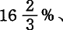50%和100%。相反，仅仅知道剩余价值率，却不能断定工作日的长度。例如，假定剩余价值率是100%，可是工作日可以是8小时、10小时、12小时等等。这个剩余价值率只表明工作日的两个组成部分即必要劳动和剩余劳动是同样大的，但并不表明每一部分各有多大。
这个比率决定剩余价值率，所以已知这两段线之比，就可以知道剩余价值率。就上述三种不同的工作日来说，剩余价值率分别等于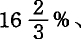50%和100%。相反，仅仅知道剩余价值率，却不能断定工作日的长度。例如，假定剩余价值率是100%，可是工作日可以是8小时、10小时、12小时等等。这个剩余价值率只表明工作日的两个组成部分即必要劳动和剩余劳动是同样大的，但并不表明每一部分各有多大。第八章工作日
1.工作日的界限
我们已经假定劳动力是按照它的价值买卖的。它的价值，和其他各种商品的价值一样，是由生产它所必要的劳动时间决定的。因此，如果工人平均一天生活资料的生产需要6小时，那么工人平均每天就要劳动6小时来逐日生产他的劳动力，或者说，再生产出他出卖劳动力得到的价值。这样，他的工作日的必要部分就是6小时，因而，在其他条件不变的情况下，是一个已定量。但是由此还不能确定工作日本身的量。
我们用ab 线表示必要劳动时间的持续或长度，假定是6小时。再假定劳动分别超过ab线1小时、3小时、6小时不等，我们就得到3条不同的线：
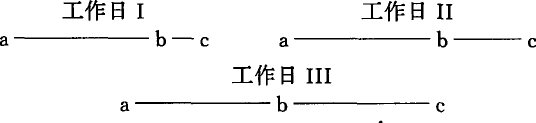
这3条线表示三种不同的工作日：七小时工作日、九小时工作日和十二小时工作日。延长线bc表示剩余劳动的长度。因为工作日等于ab+bc，即ac，所以它随着可变量bc一同变化。因为ab是已定的，所以bc与ab之比总是可以计算出来的。它在工作日Ⅰ中是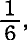在工作日Ⅱ中是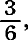在工作日Ⅲ中是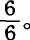又因为这个比率决定剩余价值率，所以已知这两段线之比，就可以知道剩余价值率。就上述三种不同的工作日来说，剩余价值率分别等于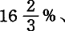50%和100%。相反，仅仅知道剩余价值率，却不能断定工作日的长度。例如，假定剩余价值率是100%，可是工作日可以是8小时、10小时、12小时等等。这个剩余价值率只表明工作日的两个组成部分即必要劳动和剩余劳动是同样大的，但并不表明每一部分各有多大。
所以，工作日不是一个不变量，而是一个可变量。它的一部分固然是由不断再生产工人本身所必需的劳动时间决定的，但是它的总长度随着剩余劳动的长度或持续时间而变化。因此，工作日是可以确定的，但是它本身是不定的(1)。
另一方面，工作日虽然不是固定的量，而是流动的量，但是它只能在一定的界限内变动。不过它的最低界限是无法确定的。当然，假定延长线bc或剩余劳动＝0，我们就得出一个最低界限，即工人为维持自身而在一天当中必须从事必要劳动的那部分时间。但是在资本主义生产方式的基础上，必要劳动始终只能是工人的工作日的一部分，因此，工作日决不会缩短到这个最低限度。可是工作日有一个最高界限。它不能延长到超出某个一定的界限。这个最高界限取决于两点。第一是劳动力的身体界限。一个人在24小时的自然日内只能支出一定量的生命力。正像一匹马天天干活，每天也只能干8小时。这种力每天必须有一部分时间休息、睡觉，人还必须有一部分时间满足身体的其他需要，如吃饭、盥洗、穿衣等等。除了这种纯粹身体的界限之外，工作日的延长还碰到道德界限。工人必须有时间满足精神需要和社会需要，这些需要的范围和数量由一般的文化状况决定。因此，工作日是在身体界限和社会界限之内变动的。但是这两个界限都有极大的弹性，有极大的变动余地。例如我们看到有8小时、10小时、12小时、14小时、16小时、18小时的工作日，也就是有各种各样长度的工作日。
资本家按照劳动力的日价值购买了劳动力。劳动力在一个工作日内的使用价值归资本家所有。因此，资本家有权要工人在一日之内为他做工。但什么是一个工作日呢？(2)当然比一个自然的生活日短。短多少呢？关于这个极限，即工作日的必要界限，资本家有他自己的看法。作为资本家，他只是人格化的资本。他的灵魂就是资本的灵魂。而资本只有一种生活本能，这就是增殖自身，创造剩余价值，用自己的不变部分即生产资料吮吸尽可能多的剩余劳动。(3)资本是死劳动，它像吸血鬼一样，只有吮吸活劳动才有生命，吮吸的活劳动越多，它的生命就越旺盛。工人劳动的时间就是资本家消费他所购买的劳动力的时间。(4)如果工人利用他的可供支配的时间来为自己做事，那他就是偷窃了资本家。(5)
可见，资本家是以商品交换规律作根据的。他和任何别的买者一样，力图从他的商品的使用价值中取得尽量多的利益。但是，突然传来了在疾风怒涛般的生产过程中一直沉默的工人的声音：
我卖给你的商品和其他的普通商品不同，它的使用可以创造价值，而且创造的价值比它本身的价值大。正是因为这个缘故你才购买它。在你是资本价值的增殖，在我则是劳动力的过多的支出。你和我在市场上只知道一个规律，即商品交换的规律。商品不归卖出商品的卖者消费，而归买进商品的买者消费。因此，我每天的劳动力归你使用。但是我必须依靠每天出卖劳动力的价格来逐日再生产劳动力，以便能够重新出卖劳动力。如果撇开由于年老等等原因造成的自然损耗不说，我明天得像今天一样，在体力、健康和精神的正常状态下来劳动。你经常向我宣讲“节俭”和“节制”的福音。好！我愿意像个有理智的、节俭的主人一样，爱惜我惟一的财产——劳动力不让它有任何荒唐的浪费。我每天只想在它的正常耐力和健康发展所容许的限度内使用它，使它运动，转变为劳动。你无限制地延长工作日，就能在一天内使用掉我三天还恢复不过来的劳动力的量。你在劳动上这样赚得的，正是我在劳动实体上损失的。使用我的劳动力和劫掠我的劳动力完全是两回事。如果在劳动量适当的情况下一个中常工人平均能活30年，那你每天支付给我的劳动力的价值就应当是它的总价值的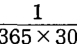或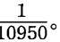但是如果你要在10年内就消费尽我的劳动力，可是每天支付给我的仍然是我的劳动力总价值的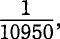而不是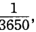那就只支付了我的劳动力日价值的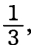因而每天就偷走了我的商品价值的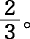你使用三天的劳动力，只付给我一天劳动力的代价。这是违反我们的契约和商品交换规律的。因此我要求正常长度的工作日，我这样要求，并不是向你求情，因为在金钱问题上没有温情可言。[192]你可能是一个模范公民，也许还是禁止虐待动物协会的会员，甚至还享有德高望重的名声，但是在你我碰面时你所代表的那个东西的里面是没有心脏跳动的。如果那里面仿佛有什么东西在跳动的话，那不过是我自己的心。我要求正常的工作日[193]，因为我和任何别的卖者一样，要求得到我的商品的价值。(6)
我们看到，撇开弹性很大的界限不说，商品交换的性质本身没有给工作日规定任何界限，因而没有给剩余劳动规定任何界限。资本家要坚持他作为买者的权利，他尽量延长工作日，如果可能，就把一个工作日变成两个工作日。另一方面，这个已经卖出的商品的独特性质给它的买者规定了一个消费的界限，并且工人也要坚持他作为卖者的权利，他要求把工作日限制在一定的正常量内。于是这里出现了二律背反，权利同权利相对抗，而这两种权利都同样是商品交换规律所承认的。在平等的权利之间，力量就起决定作用。所以，在资本主义生产的历史上，工作日的正常化过程表现为规定工作日界限的斗争，这是全体资本家即资本家阶级和全体工人即工人阶级之间的斗争。
2.对剩余劳动的贪欲。工厂主和领主
资本并没有发明剩余劳动。凡是社会上一部分人享有生产资料垄断权的地方，劳动者，无论是自由的或不自由的，都必须在维持自身生活所必需的劳动时间以外，追加超额的劳动时间来为生产资料的所有者生产生活资料(7)，不论这些所有者是雅典的贵族，伊特鲁里亚的神权政治首领，罗马的市民，诺曼的男爵，美国的奴隶主，瓦拉几亚的领主，现代的地主，还是资本家(8)。但是很明显，如果在一个经济的社会形态中占优势的不是产品的交换价值，而是产品的使用价值，剩余劳动就受到或大或小的需求范围的限制，而生产本身的性质就不会造成对剩余劳动的无限制的需求。因此，在古代，只有在谋取具有独立的货币形式的交换价值的地方，即在金银的生产上，才有骇人听闻的过度劳动。在那里，累死人的强迫劳动是过度劳动的公开形式。这只要读一读西西里的狄奥多鲁斯的记载就可以知道。(9)但是在古代世界，这只是一种例外。不过，那些还在奴隶劳动或徭役劳动等较低级形式上从事生产的民族，一旦卷入资本主义生产方式所统治的世界市场，而这个市场又使它们的产品的外销成为首要利益，那就会在奴隶制、农奴制等等野蛮暴行之上，再加上过度劳动的文明暴行。因此，在美国南部各州，当生产的目的主要是直接满足本地需要时，黑人劳动还带有一种温和的家长制的性质。但是随着棉花出口变成这些州的切身利益，黑人所从事的有时只要7年就把生命耗尽的过度劳动，就成为一种事事都要加以盘算的制度的一个因素。问题已经不再是从黑人身上榨取一定量的有用产品现在的问题是要生产剩余价值本身了。徭役劳动，例如多瑙河两公国的徭役劳动，也有类似的情形。
把多瑙河两公国对剩余劳动的贪欲和英国工厂对剩余劳动的贪欲比较一下特别有意思，因为徭役制度下的剩余劳动具有独立的、可以感觉得到的形式。
假定工作日由6小时必要劳动和6小时剩余劳动组成。在这种情况下，自由工人每周为资本家提供6×6小时即36小时的剩余劳动。这和他每周为自己劳动3天，又为资本家白白地劳动3天，完全一样。但是这种情形是觉察不出来的。剩余劳动和必要劳动融合在一起了。因此，我也可以用另外的说法来表示同样的关系，例如说工人在每分钟内为自己劳动30秒，为资本家劳动30秒，等等。而徭役劳动就不是这样。例如瓦拉几亚的农民为维持自身生活所完成的必要劳动和他为领主所完成的剩余劳动在空间上是分开的。他在自己的地里完成必要劳动，在主人的领地里完成剩余劳动。所以，这两部分劳动时间是各自独立的。在徭役劳动形式中，剩余劳动和必要劳动截然分开。这种表现形式上的差别，显然丝毫不会改变剩余劳动和必要劳动之间的量的比率。每周3天的剩余劳动，无论是叫作徭役劳动还是叫作雇佣劳动，对劳动者自己来说始终是没有形成等价物的3天劳动。不过资本家对剩余劳动的贪欲表现为渴望无限度地延长工作日，而领主的贪欲则较简单地表现为直接追求徭役的天数。(10)
在多瑙河两公国，徭役劳动是同实物地租和其他农奴制义务结合在一起的，但徭役劳动是交纳给统治阶级的最主要的贡赋。凡是存在这种情形的地方，徭役劳动很少是由农奴制产生的，相反，农奴制倒多半是由徭役劳动产生的。(11)罗马尼亚各州的情形就是这样。那里原来的生产方式是建立在公有制的基础上的，但这种公有制不同于斯拉夫的形式，也完全不同于印度的形式。一部分土地是是自由的私田，由公社成员各自耕种，另一部分土地是公有地，由公社成员共同耕种。这种共同劳动的产品，一部分作为储备基金用于防灾备荒和应付其他意外情况，一部分作为国家储备用于战争和宗教方面的开支以及公社的其他开支。久而久之，军队和教会方面的头面人物侵占了公有地，从而也就侵占了花在公有地上的劳动。自由农民在公社土地上的劳动转化成了为公社土地掠夺者而进行的徭役劳动。于是农奴制关系随着发展起来，但这只是就事实而言，不是就法律而言，直到后来，要解放全世界的俄罗斯才借口废除农奴制而把这种农奴制用法律固定下来。1831年俄国将军基谢廖夫颁布的徭役劳动法，当然是由领主们口授的。俄罗斯由此一举征服了多瑙河两公国的贵族，并博得了整个欧洲的自由派白痴们的喝采。
按照这个称为“组织规程”[194]的徭役劳动法，瓦拉几亚的每个农民除交纳详细规定的大量实物贡赋之外，还必须为所谓土地所有者完成：1.12个一般工作日；2.1个田间工作日；3.1个搬运木材的工作日。一年共14日。不过，因为制定该法令的人谙熟政治经济学，所以规定的不是通常意义的工作日，而是生产某种平均日产品所必要的工作日，而这个平均日产品又规定得非常狡猾，连塞克洛普在24小时之内也完成不了。因此，“组织规程”本身以道地的俄罗斯式讽刺的露骨语言解释说，12个工作日应理解为36日体力劳动的产品，一个田间工作日应理解为3日，一个搬运木材的工作日也应理解为3日。合计是42日徭役。此外还要加上所谓“Jobagie”，就是当地主在生产上有特殊需要时所服的劳役。每个村每年要按照人口的多寡出一定人力为领主服这种劳役。每个瓦拉几亚的农民估计要担负14日这种额外徭役劳动。这样，规定的徭役劳动每年就有56个工作日。在瓦拉几亚，由于气候不好，每年只有210日可以从事农活。其中有40日是星期天和节日，平均还有30日坏天气，加起来就去掉了70日。剩下的只有140个工作日。徭役劳动同必要劳动之比是或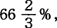这表明剩余价值率比英国农业工人或工厂工人的劳动的剩余价值率要小得多。但这只是法定的徭役劳动。“组织规程”比英国的工厂立法有更多的“自由主义”精神，易于让人规避它自己的规定。它除了把12日变成56日之外，又把56日徭役中每日的名义上的劳动定额规定得非拖到以后的日子去完成不可。例如一日的锄草定额，特别是玉米地的锄草定额，实际上要加倍的时间才能完成。某些农活的法定的一日劳动定额，甚至可以解释成所谓这一日是从5月开始一直到10月为止。对于摩尔多瓦，规定更加苛刻。有一个为胜利所陶醉的领主喊道：
“‘组织规程’规定的12日徭役，等于一年365日！”(12)
如果说通过一项项条文使对剩余劳动的贪欲合法化的多瑙河两公国“组织规程”是这种贪欲的积极表现，那么，英国的工厂法是这种贪欲的消极表现。英国的工厂法是通过国家，而且是通过资本家和地主统治的国家所实行的对工作日的强制的限制，来节制资本无限度地榨取劳动力的渴望。即使撇开一天比一天更带威胁性地高涨着的工人运动不说，也有必要对工厂劳动强制地进行限制，正像有必要用海鸟粪对英国田地施肥一样。同是盲目的掠夺欲，在后一种情况下使地力枯竭，而在前一种情况下使国家的生命力遭到根本的摧残。英国的周期复发的流行病和德法两国士兵身长的降低，都同样明白地说明了这个问题。(13)
1850年制定的现行（1867年）工厂法[195]规定，一周平均每个工作日为10小时，即一周的前5天为12小时，从早晨6时至晚上6时，其中包括法定的半小时早饭时间和一小时午饭时间，做工时间净剩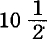小时；星期六为8小时，从早晨6时至午后2时，其中有半小时早饭时间。每周净剩60小时，前5天为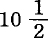小时，星期六为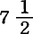小时。(14) [196]为了监督这项法律的执行，任命了专门的官员，即工厂视察员，直属内务部，他们的报告由议会每半年公布一次。这些报告不断地提供关于资本家对剩余劳动贪欲的官方统计材料。
让我们听一听这些工厂视察员的报告吧。(15)
“进行欺骗的工厂主在早晨6点前1刻就开工，有时还要早些，有时稍晚些，晚上6点过1刻才收工，有时稍早些，有时还要晚些。他把名义上规定的半小时早饭时间前后各侵占5分钟，一小时午饭时间前后各侵占10分钟。星期六下午到2点过1刻才收工，有时稍早些，有时还要晚些。这样他就赚到：
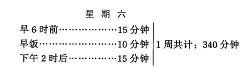
就是说，每周多出来5小时40分钟，每年以50个劳动周计算（除掉2周作为节日或因故停工），共为27个工作日。”(16)
“每个工作日比标准时间延长5分钟，一年就等于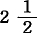个工作日。”(17)“这里捞一点时间，那里捞一点时间，一天多出一小时，一年12个月就变成13个月了。”(18)
在危机时期，生产中断，“开工不足”，每周只开工几天。这当然不影响延长工作日的欲望。营业越不振，就越要从已有的营业中取得更大的利润。开工的时间越少，就越要使剩余劳动时间延长。工厂视察员关于1857—1858年的危机时期报告说：
“在生意这样不景气的时候还有过度劳动现象，人们也许会认为是矛盾的；可是生意不景气却刺激那些无所顾忌的人去犯法。他们这样就保证自己能取得额外利润……”伦纳德·霍纳说：“我的管区有122家工厂倒闭，143家停工，所有其余的工厂也都开工不足，但是就在这个时期，超过法定时间的过度劳动仍然存在。”(19)豪威耳先生说：“虽然大多数工厂由于营业不振只开半工，但我和以前一样仍旧接到同样多的控告，说由于侵占法定的吃饭时间和休息时间，工人每天被夺去半小时或3刻钟。”(20)
在1861年至1865年的可怕的棉业危机时期，也发生了同样的现象，不过规模比较小。(21)
“如果我们在吃饭时间或其他非法定时间查到有工人在做工，有人有时就出来辩解，说这些人怎么也不愿离开工厂，要他们停止工作〈擦洗机器等等〉，就得使用强制办法，特别是在星期六下午更是如此。但是，如果机器停转后仍有人手’留在工厂里，那只是因为在早晨6时至晚上6时的法定劳动时间内没有拨出时间让他们干这类事情。”(22)
“看来，靠超过法定时间的过度劳动获得额外利润，对许多工厂主来说是一个难于抗拒的巨大诱惑。他们指望不被发觉，而且心中盘算，即使被发觉了，拿出一笔小小的罚款和诉讼费，也仍然有利可图。”(23)“如果额外时间是在一天之内零敲碎打地偷窃来的，那么，视察员要想找出违法的证据就会遇到几乎不可克服的困难。”(24)
资本“零敲碎打地偷窃”工人吃饭时间和休息时间的这种行为又被工厂视察员叫作“偷占几分钟时间”(25)，“夺走几分钟时间”(26)，工人中间流行的术语，叫作“啃吃饭时间”(27)。
我们看到，在这种气氛中，剩余价值由剩余劳动形成已经不是什么秘密。
“有一位很可敬的工厂主对我说：如果你允许我每天只让工人多干10分钟的话，那你一年就把1000镑放进了我的口袋。”(28)“时间的原子就是利润的要素。”(29)
在这一点上，最能说明问题的是，人们把那些全天劳动的工人叫作“全日工”，把13岁以下的只准劳动6小时的童工叫作“半日工”(30)。在这里，工人不过是人格化的劳动时间。一切个人之间的区别都化成“全日工”和“半日工”的区别[199]了。
3.在剥削上不受法律限制的英国工业部门
以上我们考察了这样一些部门中延长工作日的欲望，对剩余劳动的狼一般的贪婪，在这些部门中，无限度的压榨，正如一个英国资产阶级经济学家所说，比西班牙人对美洲红种人的暴虐有过之而无不及(31)，因此，资本终于受到法律规定的约束。现在我们来看看另外一些生产部门，在那里，直到今天，或者直到不久以前，还在毫无拘束地压榨劳动力。
“1860年1月14日，郡治安法官布罗顿先生在诺丁汉市会议厅主持的一次集会上说，从事花边生产的那部分城市居民过着极其贫穷痛苦的生活，其困苦程度是文明世界的其他地方所没有见过的……9岁到10岁的孩子，在大清早2、3、4点钟就从肮脏的床上被拉起来，为了勉强口，不得不一直干到夜里10、 11、12点钟。他们四肢瘦弱，身躯萎缩，神态呆痴，麻木得像石头人一样，使人看一眼都感到不寒而栗。马利特先生和别的工厂主起来抗议讨论这类事情，是一点也不奇怪的……这种制度，正像蒙塔古·瓦尔皮牧师所描写的那样，是无拘无束的奴隶制，是在社会、肉体、道德和智力方面的奴隶制……如果一个城市竟举行公众集会，请求把男子每天的劳动时间限制为18小时，那我们将作何感想呢！……我们抨击弗吉尼亚和卡罗来纳的种植园主。然而，他们买卖黑奴、鞭笞黑奴、贩卖人肉的行为，比起为资本家的利益而制造面纱和硬领的过程中发生的那种慢性杀人的暴行，难道更可恶吗？”(32)
斯塔福德郡的陶器业，在最近22年来，曾三度成为议会调查的对象。调查的结果，第一次见斯克里文先生1841年向“童工调查委员会”提出的报告，第二次见奉枢密院[200]医官命令公布的格林豪医生1860年的报告（《公共卫生。第3号报告》第1部分第102—113页），最后一次见朗格先生1863年的报告，载于1863年6月15日的童工调查委员会。第1号报告》。[201]在这里，就我的任务来说，只要从1860年和1863年的报告中摘录一些受剥削的儿童本人的证词就够了。根据儿童的情况也就可以推知成年人的情况，特别是少女和妇女的情况。同这一工业部门比较起来，棉纺业之类的部门还算是很愉快很卫生的职业呢。(33)
威廉·伍德，9岁，“从7岁零10个月就开始做工”。一直是“运模子”（把已经入模的坯子搬到干燥房，再把空模搬回来）。他每周天天早晨6点上工，晚上9点左右下工。“我每周天天都干到晚上9点钟。例如最近七八个星期都是这样。”就是说，一个7岁的孩子竟劳动15小时！约·默里，12岁，他说：
“我干的是运模子和转辘轳。我早晨6点钟上工，有时4点钟上工。昨天，我干了一整夜，一直干到今天早晨6点钟。我从前天夜里起就没有上过床。除我以外，还有八九个孩子昨天都干了一整夜。除了一个没有来，其余的孩子今天早晨又都上工了。我一个星期挣3先令6便士〈1塔勒5格罗申〉。我整整干了一夜，也没多得到一个钱。上星期我就整整干了两夜。”
弗尼霍夫，10岁，他说：
“我不总是能够得到十足一小时的吃饭时间，而往往只有半小时，每星期四、星期五、星期六都是这样。”(34)
格林豪医生指出，在特伦特河畔斯托克和在沃尔斯坦顿这两个陶业区，人的寿命特别短。20岁以上的男子从事陶业生产的，在斯托克区虽然只占36.6%，在沃尔斯坦顿只占30.4%，但是在这类年龄的男子死亡人数中，死于胸腔病的陶工在斯托克区占一半以上，在沃尔斯坦顿区约占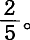在汉利行医的布思罗伊德医生说：
“陶工一代比一代矮，一代比一代弱。”
另一个医生麦克贝恩先生也说：
“我在陶工中间行医25年了，我发觉这个阶级在身长和体重方面显著退化。”
以上这些证词是从格林豪医生1860年的报告(35)中摘录的
下面我们从几个调查委员1863年的报告中摘录几段。北斯塔福德郡医院主任医生阿利奇说：
“陶工作为一个阶级，不分男女……代表着身体上和道德上退化的人口他们一般都是身材矮小，发育不良，而且胸部往往是畸型的。他们未老先衰，寿命不长，迟钝而又贫血；他们常患消化不良症、肝脏病、肾脏病和风湿症，表明体质极为虚弱。但他们最常患的是胸腔病：肺炎、肺结核、支气管炎和哮喘病。有一种哮喘病是陶工特有的，通称陶工哮喘病或陶工肺结核。还有侵及腺、骨骼和身体其他部分的瘰疬病，患这种病的陶工占以上。只是由于有新的人口从邻近的乡村地区补充进来，由于同较为健康的人结婚，这个地区的人口才没有发生更严重的退化。”
不久前还是该医院外科医生的查理·帕森斯先生在给调查委员朗格的信中写道：
“我所能说的只是我个人的观察，并没有什么统计材料作根据。但是我可以毫不犹豫地说，每当我看到这些为满足父母和雇主的贪心而牺牲了健康的不幸孩子们的时候，我的愤慨一次又一次地涌上心头。”
他列举陶工患病的种种原因，最后指出，最重要的原因是“劳动时间过长”。调查委员会的报告希望：
“一个在全世界人们的心目中占有如此卓越地位的行业，不能再容忍这种可耻的现象：它依靠工人的劳动和技巧，取得了光辉的成就，但伴随而来的是工人身体退化，遭受种种折磨，早期死亡。”(36)
这里所说的英格兰陶器业的情况，也适用于苏格兰的陶器业。(37)
火柴制造业是从1833年发明用木梗涂磷的办法之后出现的自1845年起，它在英国迅速地发展起来，并由伦敦人口稠密的地区传到曼彻斯特、伯明翰、利物浦、布里斯托尔、诺里奇、纽卡斯尔、格拉斯哥等地，它同时也使牙关锁闭症蔓延到各地。维也纳的一位医生还在1845年就发现这种病是火柴工人的职业病。工人中有一半是13岁以下的儿童和不满18岁的少年。谁都知道，这种制造业有害健康，令人生厌，所以只有工人阶级中那些最不幸的人，饿得半死的寡妇等等，才肯把“衣衫褴褛、饿得半死、无人照管、未受教育的孩子”(38)送去干这种活。在委员怀特1863年询问过的证人当中，有270人不满18岁，40人不满10岁，10人只有8岁，5人只有6岁。工作日从12到14或15小时不等，此外还有夜间劳动，没有固定的吃饭时间，而且多半是在充满磷毒的工作室里吃饭。如果但丁还在他会发现，他所想象的最残酷的地狱也赶不上这种制造业中的情景
在壁纸工厂中，粗糙的壁纸用机器印刷，精致的壁纸用手工印刷生产的旺季是从10月初到第二年4月底。在这段时期内，劳动往往从早晨6时一直持续到晚上10时，甚至到深夜，中间几乎没有休息
耶·李奇说：
“去年〈1862年〉冬天，19个女孩子中，有6个因为劳动过度，害了病，不能上工。为了不让她们打瞌睡，我必须对她们大声喊叫。”威·达菲说：“孩子们往往疲倦得睁不开眼睛，其实，我们自己往往也是如此。”约·莱特伯恩说：“我13岁……去年冬天我们干到晚上9点，前年冬天干到晚上10点。去年冬天我的脚有伤，差不多每天晚上都疼得哭起来。”乔治·阿斯普登说：“我这个孩子7岁的时候，我就常常背着他在雪地里上下工，他常常要做16个钟头的工！……当他在机器旁干活的时候，我往往得跪下来喂他饭，因为他不能离开机器，也不能把机器停下来。”曼彻斯特一家工厂的股东兼经理斯密斯说：“我们〈他是指那些为“我们”做工的“人手”〉一直做工，中间不停下来吃饭，所以一天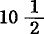小时的活到下午4点半就干完了，以后的时间都是额外时间(39)。〈难道这位斯密斯先生在这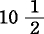小时内也不吃一顿饭吗？〉我们〈还是那位斯密斯〉很少在晚上6点以前停工〈他是指停止消费“我们的”劳动力机器〉，所以我们〈又是克里斯平[203]〉实际上整年都有额外时间……在过去18个月当中，无论孩子或成年人〈152个儿童和18岁以下的少年，140个成年人〉平均每周至少要干7天零5小时即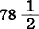小时。在今年〈1863年〉5月2日以前的6周内，平均时间更长了，每周达8天即84小时！”
还是这位如此爱用君主口吻以“我们”自称(40)的斯密斯先生，微笑着补充说：“机器劳动是轻松的。”采用手工印刷的工厂主却说：“手工劳动比机器劳动要合乎卫生。”但是工厂主先生们全都愤愤不平地反对“至少在吃饭时间使机器停下来”的建议。巴勒区（伦敦）一家壁纸厂的经理奥特利先生说道：
“要是法律准许的劳动时间是从早晨6点到晚上9点，对我们〈！〉倒很合适，可是工厂法规定的时间是从早晨6点到晚上6点，这对我们〈！〉可不合适……在午饭时间我们的机器总是停下来〈何等宽宏大量！〉。这样做在纸张和颜料方面不会造成大不了的损失。”接着他满怀同情地补充说：“但是，我可以理解，因此而造成的损失是人们所不喜欢的。”
委员会的报告坦率地认为，某些“大公司”担心丧失时间，即担心丧失占有他人劳动的时间，并从而“丧失利润”。这不能成为“充足的理由”，让13岁以下的儿童和不满18岁的少年在长达12—16小时的时间内“丧失”吃午饭的时间，或者像给蒸汽机添煤加水，给羊毛加肥皂水，给机轮上油等等那样，把午饭仅仅当作劳动资料的辅助材料在生产过程进行中加给他们。(41)
在英国，没有一个工业部门像面包业（刚刚兴起的机制面包业不算在内）那样，直到今天还保持着如此古老的、只有从罗马帝国时代的诗人作品里才可以看到的纪元前的生产方式。不过，前面已经说过，资本起初并不关心它所征服的劳动过程的技术性质。起初，它是遇到什么样的劳动过程就采用什么样的劳动过程。(42)
面包搀假的情况，令人难以置信，在伦敦尤为厉害。这种现象最先是由下院“食物搀假”调查委员会（1855—1856年）和哈索尔医生《揭穿了的搀假行为》一书揭发出来的。(43)揭发的结果是1860年8月6日颁布了“防止饮食品搀假”法，这是一项无效的法律，因为它对每个企图靠买卖假货“赚正当钱”的自由贸易论者当然是极端宽容的。(44)委员会本身也相当坦率地承认，自由贸易实质上是假货贸易，或者用英国人的俏皮说法，是“诡辩品”贸易。事实上，这种“诡辩”比普罗塔哥拉[205]更会颠倒黑白，比埃利亚派[206]更能当面证明一切真实都只不过是假象。(45)
不管怎样，委员会把公众的目光引向了他们“每日的面包”，从而引向了面包业。与此同时，伦敦面包工人在群众大会上和在向议会的请愿中，发出了反对过度劳动等等的呼声。这种呼声如此急迫，以致当局把我们上面屡次提到的1863年委员会的委员休·西·特里门希尔先生，任命为皇家调查专员。他的报告(46)和列举的证词激动了公众，不过不是激动了公众的心，而是激动了公众的胃。熟读圣经的英国人虽然清楚地知道，一个人除非由于上帝的恩赐而成为资本家、大地主或领干薪者，否则必须汗流满面来换取面包，但是他不知道，他每天吃的面包中含有一定量的人汗，并且混杂着脓血、蜘蛛网、死蟑螂和发霉的德国酵母，更不用提明矾、砂粒以及其他可口的矿物质了。因此，不管“贸易自由”多么神圣，这个一向“自由”的面包业终于受到国家视察员的监督（1863年议会会议快结束时），同时这次会议通过的法令还禁止18岁以下的面包工人在晚上9点至第二天早晨5点这段时间内做工。这项最后的条款充分说明了这个带有古代遗风的工业部门中过度劳动的情形。
“伦敦的面包工人通常在夜里11点开始干活。他先发面，这是一种极费力气的活。根据烤制面包的数量和精粗程度，需要半小时到三刻钟。然后他躺在那块兼作发面盆盖子的面板上，拿一个面袋枕在头下，再拿一个面袋盖在身上睡几个钟头。随后他一连紧张地忙上5个小时，把面揉好，分成一块一块，做成面包的样子，放到炉里去烤，再从炉里取出，等等。烤炉房的温度达75度到90度(47)，小烤炉房的温度还要高些。各种各样的面包做成后，分送面包的工作又开始了。短工中的一大部分人，刚刚结束了上述繁重的夜间劳动，又要在白天提着篮子或推着车子挨户送面包，有时，他们还要再在烤炉房里干些别的活根据季节和营业规模的不同，劳动在下午1点到6点之间结束，而另一部分工人则在烤炉房里一直忙到晚上。”(48)“在伦敦社交季节，伦敦西头烤制‘全价面包的工人通常是在夜里11点开始干活，一直忙到第二天早晨8点，中间只稍微休息一两次。然后他们就运送面包，或有时在烤炉房烤面包干，一直干到下午4点、5点、6点甚至7点。活全干完了才睡6个小时，有时只睡5个或4个小时。到了星期五，总是提前上工，大约从晚上10点开始，不停地烤制面包或发送面包，一直忙到星期六晚上8点，而在大多数情况下，要一直干到星期日早晨4点或5点。就连出售‘全价’面包的第一流面包房，到了星期天，也要为第二天做4—5小时的准备工作……在‘卖低价面包的老板’那里（前面已经说过，这种人在伦敦面包业主中占），面包工人的劳动时间更长，不过几乎全是在烤炉房里做工，因为他们的老板除把面包供应一些小铺子外，只在自己的店铺里出售。每当临近周末……就是说从星期四起，晚上10点就开始干活，一直干到星期六深夜，中间只有很少的休息。”(49)
至于这些“卖低价面包的老板”，连资产阶级观点也承认：“工人的无酬劳动是他们进行竞争的基础”(50)。而“卖全价面包的老板”则向调查委员会揭发说，他的“卖低价面包”的竞争者盗窃别人的劳动，并在面包中搀假。
“他们所以走运，全靠欺骗公众，压榨工人，要工人劳动18小时，而只给12小时的工资。”(51)
面包搀假和卖低价面包的面包业主阶层的形成这两种现象，在英国是从18世纪初发展起来的，那时，这一行业的行会性质刚刚消失，而资本家以面粉厂厂主或面粉代理商的面目，出现在名义上的面包房老板的背后。(52)这就为资本主义的生产，为无限度地延长工作日和为夜间劳动奠定了基础，虽然夜间劳动甚至在伦敦也只是在1824年才真正站稳脚跟。(53)
根据以上所述，我们就可以了解，为什么委员会的报告把面包工人列为短命的工人；这些工人即使幸运地逃脱了工人阶级的各个部分通常都难免的夭折，也很少活到42岁。可是，等着去面包业做工的人总是非常之多。就伦敦来说，这种“劳动力”的来源是苏格兰、英格兰西部农业区以及德国。
1858—1860年，爱尔兰的面包工人自己筹款组织了多次群众大会，为反对做夜工和星期日劳动进行鼓动。公众怀着爱尔兰人的热情表示站在工人一边，例如在都柏林1860年的五月大会上就是这样。由于这一运动，只做日工的规定在弗克斯福德、基尔肯尼、克郎梅尔、沃特福德等地真正有效地得到执行。
“在雇佣工人苦不堪言的利默里克，由于面包房老板，特别是面包房兼磨坊老板的反抗，运动遭到了失败。利默里克失败的例子导致恩尼斯和蒂珀雷里两郡的倒退。在公众的不满情绪表现得最强烈的科克郡，老板们利用他们解雇工人的权力，把运动压了下去。在都柏林，老板们进行了最坚决的反抗，他们用迫害领导运动的工人的办法，迫使其余的工人让步，同意做夜工和星期日劳动。”(54)
在爱尔兰武装到牙齿的英国政府所属的委员会，竟痛切地规劝都柏林、利默里克、科克等地那些铁石心肠的面包房老板：
“委员会认为，劳动时间受自然规律的限制，若有违反，必受惩罚。老板们用解雇来威胁工人，迫使他们违背宗教信仰，违反国家法律，冒犯社会舆论〈这些全是指星期日劳动〉，这样老板们就挑起劳资之间的仇恨，提供了危害宗教道德和社会秩序的先例……委员会认为，把工作日延长到12小时以上，是横暴地侵犯工人的家庭生活和私人生活，这就侵犯一个男人的家庭，使他不能履行他作为一个儿子、兄弟、丈夫和父亲所应尽的家庭义务，以致造成道德上的非常不幸的后果。12小时以上的劳动会损害工人的健康，使他们早衰早死，因而造成工人家庭的不幸，恰好在最必要的时候，失去家长的照料和扶持。”(55)
以上是爱尔兰的情形。在海峡彼岸的苏格兰，农业工人（即庄稼汉）揭露，他在最寒冷的天气里，每天要劳动13—14小时，星期日还要从事4小时的额外劳动（这还是在信守安息日[208]的国家里呢！）。(56)就在这个时候，伦敦一个大陪审团面前站着三个铁路员工一个列车长，一个司机，一个信号员。一次惨重的车祸把几百名旅客送到了另一个世界。这几个铁路员工的疏忽大意是造成这次不幸事件的原因。他们在陪审员面前异口同声地说，10—12年以前，他们每天只劳动8小时。但是在最近5—6年内，劳动时间延长到了14、18甚至20小时，而在旅客特别拥挤的时候，例如在旅行季节，他们往往要连续劳动40—50小时。可是他们都是些普通人，并不是塞克洛普。他们的劳动力使用到一定限度就不中用了。他们浑身麻木，头发昏，眼发花。但是最“可尊敬的不列颠陪审员”对他们的回答，是定为“杀人罪”，交付巡回审判庭审理，并只在一项温和的附录中表示良好的愿望，希望铁路大亨们将来在购买必要数量的“劳动力”时大方一些，在榨取所购买的劳动力时“节制”、“节欲”或“节俭”一些。(57)
一大群不同职业、年龄、性别的各种各样的工人，争先恐后地向我们拥来，简直比被杀者的鬼魂向奥德赛拥去还要厉害。即使不去参看他们腋下夹着的蓝皮书，我们也可以一眼看出他们劳动过度现在让我们从这一大群人当中再挑出两种人来，一种是女时装工，一种是铁匠。这两种人的鲜明的对照表明，在资本面前一切人都是平等的。
1863年6月下旬，伦敦所有的日报都用《活活累死》这一“耸人听闻”的标题登载着一条消息，报道20岁的女时装工玛丽· 安·沃克利是怎样死的。她在一家很有名的宫廷时装店里做工，受一位芳名爱利莎的老板娘的剥削。这里又碰到我们常常讲的那一类老故事了。(58)店里的少女平均每天劳动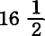小时，在忙季，她们往往要一连劳动30小时，要不时靠喝雪莉酒、波尔图葡萄酒或咖啡来维持她们已经不听使唤的“劳动力”。当时正是忙季的最高潮。为了迎贺刚从国外进口的威尔士亲王夫人(59)，少女们要为高贵的夫人小姐在转眼之间就变出参加舞会的华丽服装来。玛丽·安·沃克利同其他60个少女一起连续干了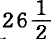小时，每30个人挤在一间屋里，空气少到还不及需要量的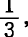夜里睡在用木板隔成的一间间不透气的小屋里，每两人一张床。(60)这还是伦敦一家较好的时装店。玛丽·安·沃克利星期五得病，星期日就死了，而使老板娘爱利莎大为吃惊的是，她竟没有来得及把最后一件礼服做好。医生基斯先生被请来的时候已经太迟了，他直率地向验尸陪审团作证说：
“玛丽·安·沃克利致死的原因，是在过分拥挤的工作室里劳动时间过长，以及寝室太小又不通风。”
为了教医生讲话得体，验尸陪审团却说：
“死者是中风死的，但是也有理由担心，在过分拥挤的工作室里劳动过度等等，可能加速了她的死亡。”
自由贸易论者科布顿和布莱特的机关报《晨星报》叫喊道：“我们的白奴累垮而进入坟墓了，无声无臭地憔悴而死了。”(61)
“累死——这是目前普遍存在的现象，不仅在时装店是如此，而且在很多地方，在一切生意兴隆的地方都是如此……我们试以铁匠为例。如果可以相信诗人的话，那么世界上再没有像铁匠那样强健、那样快活的人了。他大清早就起来，太阳还没有出来，就丁当丁当地打起铁来。他比谁都吃得多喝得足，睡得好。单就身体条件来说，如果劳动适度，铁匠的情况确实是属于最好的了。但是，我们到城里去，看看这些健壮的汉子所担负的劳动重担看看他们在我国的死亡表上所占据的位置吧。在马里勒本区〈伦敦最大的市区之一〉，铁匠每年的死亡率为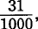比英国成年男子的平均死亡率高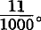打铁几乎是人的天生的技能，本来是无可非议的，只是由于过度劳动才成为毁灭人的职业。他每天能打这么多锤，迈这么多步，呼吸这么多次，干这么多活，平均能活比方说50年。现在强迫他每天多打这么多锤，多迈这么多步，多呼吸这么多次，而这一切加在一起就使他的生命力每天多耗费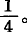他尽力做了，结果在一个有限的时期内多干了的活，但是他活不到50岁，他37岁就死了。”(62)
4.日工和夜工。换班制度
从价值增殖过程来看，不变资本即生产资料的存在，只是为了吮吸劳动，并且随着吮吸每一滴劳动吮吸一定比例的剩余劳动。如果它们不这样做，而只是闲置在那里，就给资本家造成消极的损失，因为生产资料闲置起来就成了无用的预付资本；一旦恢复中断的生产必须追加开支，这种损失就成为积极的损失。把工作日延长到自然日的界限以外，延长到夜间，只是一种缓和的办法，只能大致满足一下吸血鬼吮吸劳动鲜血的欲望。因此，在一昼夜24小时内都占有劳动，是资本主义生产的内在要求。但是日夜不停地榨取同一劳动力从身体上说是不可能的，因此，为克服身体上的障碍，就要求白天被吸尽的劳动力和夜里被吸尽的劳动力换班工作。换班有各种办法例如可以使一部分员工这个星期做日班，下个星期做夜班，等等。大家知道，这种换班制度，这种换班制的经营方法，在英国棉纺织业等部门方兴未艾的青春时期是很盛行的，今天，在莫斯科省的纺纱厂中也很流行。这种24小时连续不停的生产过程，作为一种制度，直到今天还存在于大不列颠的许多依然“自由”的工业部门中，其中如英格兰、威尔士和苏格兰的炼铁厂、锻冶厂、压延厂以及其他金属工厂在这里，劳动过程除了6个工作日每天24小时，在大多数工厂还包括星期日24小时。工人中有男有女，有成年人有儿童。儿童和少年从8岁（有时是6岁）直到18岁年龄不等。(63)在某些部门中，少女和妇女也整夜和男工一道做工。(64)
我们且不说夜工的一般害处。(65)昼夜24小时持续不断的生产过程，为打破名义上的工作日界限提供了极大的方便。例如，在上述那些劳动十分繁重的工业部门中(66)，每个工人公认的工作日大多为12小时，无论夜工或日工都是如此。但是在很多场合，那种超出这一界限的过度劳动，用英国官方报告的话来说，“实在可怕”(67)。报告说：
“任何有感情的人想到证词中提到的9—12岁儿童所担负的劳动量，都不能不得出结论说，再也不能容许父母和雇主这样滥用权力。”(68)
“儿童昼夜轮班做工的办法，无论在忙时或平时，都会使工作日极度延长。这种延长在许多场合不仅骇人听闻，而且简直令人难以置信。有时难免有的儿童因某种原因不能上工接班。这时，一个或几个该下工的儿童就得留下来填补空位。这个办法是人人皆知的，有一次，我问一个压延厂的经理，没有上工的儿童由谁代替，他竟回答说：‘我知道，你心里和我一样明白。’他毫不犹豫地承认了上述事实。”(69)
“有一个压延厂，名义上的工作日是从早晨6点到晚上5点半。有一个儿童，每星期有4个夜晚，至少要干到第二天晚上8点半……这样一直继续了6个月。”“另一个儿童，9岁时，有时一连做3班，每班12小时；10岁时，有时一连干两天两夜。”“第三个儿童，今年10岁，每星期有三天都是从早晨6点一直干到夜间12点，其余几天干到晚上9点。”“第四个儿童，今年13岁，整个星期都是从下午6点干到第二天中午12点，有时接连做3班，例如从星期一早晨一直干到星期二夜晚。”“第五个儿童，今年12岁，在斯泰夫利铸铁厂做工，他一连14天都是从早晨6点干到夜间12点，他已经不能再这样干下去了。”9岁的乔治·阿林斯沃思说：“我是上星期五来的。我们应当在第二天清早3点上工。所以我就留在这里过夜。我家离这里有5英里路。我睡在地板上，铺一条皮围裙，盖一件短外衣。以后的两天我早晨6点来上工。唉！这个地方真热！来这儿以前，我有整整一年的时间也是在高炉上做工。那是在乡下的一家非常大的工厂，在那里，星期六也是清早3点上工，不过好歹还能回家睡觉，因为离家不远。在别的日子里，我早晨6点上工，到晚上6点或者7点下工。”如此等等。(70)
现在我们来听听资本自己是怎样解释这种24小时制度的。当然，对于这种制度的极端形式，对于它滥用这种制度，以致把工作日延长到“骇人听闻和令人难以置信”的程度，它是避而不谈的。它所谈的只是这种制度的“正常”形式。
内勒—维克斯公司炼钢厂老板，雇有600至700人，其中只有10%未满18岁，这些未满18岁的工人当中又只有20个男孩是做夜班的。这个公司的老板说：
“这些男孩根本不感到酷热难熬。温度大约介于86°至90°之间(71)……锻冶车间和压轧车间分昼夜两班劳动，其他各车间就只有日班，从早晨6点到晚上6点。锻冶车间的劳动是从12点到12点。有一些人只做夜工，不日夜换班……我们没有发现日工和夜工对健康〈内勒—维克斯公司老板的健康吗？〉有什么不同的影响。而且，休息时间固定不变比昼夜改变恐怕要睡得好些……约有20个未满18岁的少年做夜班……不叫18岁以下的少年做夜工，我们就应付不下去。我们所以反对，是因为这会增加生产费用。熟练工人和工头不容易找，而少年工要多少有多少……当然，我们使用的少年工的比例是比较小的，所以限制夜工同我们并没有多大的利害关系。”(72)
约翰·布朗公司钢铁厂有3000名成年男工和少年工，一部分制钢制铁的重活是“昼夜换班”的。该公司的J.埃利斯先生说，在劳动繁重的制钢厂，每两个成年男工配一个或两个少年工。在他们公司里，18岁以下的少年工有500名，其中约即170名不满13岁。关于拟议中的法律修正案，埃利斯先生说：
“禁止未满18岁的人在24小时内劳动12小时以上，我并不认为是特别值得谴责的。但是我不认为，人们可以划一条线来规定12岁以上的少年免做夜工。我们宁可接受完全禁止未满13岁甚至15岁的少年做工的法律，而不愿接受不让我们已有的少年做夜工的禁令。做日班的少年也必须轮换做夜班，因为成年男工不能老是做夜班；这会毁掉他们的健康。不过我们认为，做一星期夜工，又做一星期日工，不会有什么害处。〈而内勒—维克斯公司为了维护自己工厂的利益，却相反地认为，连续做夜工并没有害处，定期轮换做夜工倒可能有害处。〉我们看到，轮换做夜工的人同专做日工的人同样健康……我们反对禁止8岁以下的少年做夜工，因为这会增加费用。这就是惟一的理由。〈多么无耻的坦率！〉我们认为，为此增加的费用，会超出企业正常的负担能力，如果适当地考虑到企业的成效的话。〈多么拐弯抹角！〉这里劳力很少，进行这种调整，就会使劳力不够用。〈这就是说，埃利斯—布朗公司就会陷入不得不如数支付劳动力价值的不幸境地。〉”(73)
卡姆梅尔公司的“塞克洛普”钢铁厂的规模同上述约翰·布朗公司不相上下。该厂的经理曾把他的一份书面证词亲手递交给政府委员怀特，但是后来把证词退给他修改时，他又觉得最好还是把这个手稿隐藏起来。但怀特先生的记忆力很强。他非常清楚地记得，在塞克洛普公司看来，禁止儿童和少年做夜工是“行不通的事情；这无异于关闭他们的工厂”，虽然在他们工厂中未满18岁的少年只占6%强，未满13岁的只占1%！(74)
关于这个问题，阿特克利夫的炼钢、压延、锻铁工厂，桑德森兄弟钢铁公司的E.F.桑德森先生说：
“禁止未满18岁的少年做夜工会引起很大的困难；主要的困难是，用成年男工代替少年工必然使费用增加。增加多少，我说不上，但是看来不会增加到使工厂主能够提高钢的价格，因此，这种损失就落在工厂主身上，因为成年男工〈多么固执的人！〉当然会拒绝承担这种损失。”
桑德森先生不知道他究竟付给儿童多少工资，不过，
“大概每人每周得到4—5先令……少年工干的活，一般地说来〈当然不总是“特殊地说来”〉，有少年工的力气就足够用了，用成年男工的较大力气是得不偿失，只有在很少的场合，如金属制件很重时，使用这种较大的力气才合算。成年男工也喜欢有个少年工当下手，因为成年男工不那么听话。此外，儿童应当从小就开始学手艺。只许少年做日工，就达不到这个目的”。
为什么呢？为什么少年不能在白天学手艺呢？你的理由是什么呢？
“因为这样一来，成年男工一周做日工，一周做夜工，就会有一半时间和同班的少年工分开，从而把他们从少年工那里得到的利益丧失一半。成年男工教少年工学手艺，就算作少年工劳动报酬的一部分，这就使成年男工能够得到廉价的少年劳动。所以，只准少年做日工，就会使每个成年男工的利益丧失一半。”
换句话说，桑德森公司就得自己掏腰包，而不能再用少年工的夜间劳动来支付成年男工的这部分工资了。这样一来，桑德森公司的利润就会减少一些，而这就是桑德森公司所谓少年工不能在白天学手艺的好理由(75)。此外，现在同少年工换班的成年男工就得担负起全部的夜工，这是他们不能忍受的。总之，困难是太大了，也许会使夜工完全停下来。E.F.桑德森说：“至于说到钢的生产本身，那倒不会有什么差别。但是！”但是桑德森公司不单是生产钢而已。生产钢只是赚钱的借口。熔炉、轧钢设备等等，厂房、机器、铁、煤等等，除了变成钢，还有别的任务。它们的存在是为了吮吸剩余劳动，而24小时吮吸的剩余劳动当然比12小时多。事实上，按照上帝旨意和人间法律，桑德森公司有了它们，也就有了一张证书，可以在一天全部24小时内支配一定数量人手的劳动时间；而它们吮吸劳动的职能一旦中断，它们也就丧失了资本的性质，从而给桑德森公司造成纯粹的损失。
“在这种情况下，由于非常贵重的机器有一半时间停着不用，那就会造成损失。并且，为了生产在目前这种制度下所能生产的同样数量的产品，就得把厂房和机器增加一倍，而这就会使费用增加一倍。”
其他资本家都只准在白天开工，他们的厂房、机器、原料到夜间就“停着不用”，可是为什么这个桑德森公司偏偏要求特权呢？E.F.桑德森代表全体桑德森回答说：
“是的，凡是只在白天开工的工厂，都会遭受到这种由于机器停着不用而造成的损失。但是我们使用熔炉，损失就更大。如果熔炉不停火，就会浪费燃料〈现在却是浪费工人的生命材料〉，如果熔炉停火，就要重新生火并等待烧到必要的热度，这就损失了时间〈而损失的睡眠时间——甚至是8岁孩子的睡眠时间，正是桑德森家族捞到的劳动时间〉，而且一冷一热会使熔炉受到损害〈而昼夜换班劳动却不会使这些熔炉受到损害了〉”(76)。
5.争取正常工作日的斗争。14世纪中叶至17世纪末叶关于延长工作日的强制性法律
“什么是一个工作日呢？”资本支付劳动力的日价值，可以在多长的时间内消费劳动力呢？在劳动力本身的再生产所需要的劳动时间以外，可以把工作日再延长到什么程度呢？我们知道，资本对这些问题的回答是：工作日就是一昼夜24小时减去几小时休息时间。没有这种休息时间，劳动力就根本不能重新工作。首先，不言而喻，工人终生不外就是劳动力，因此他的全部可供支配的时间，按照自然和法律都是劳动时间，也就是说，应当用于资本的自行增殖。至于个人受教育的时间，发展智力的时间，履行社会职能的时间，进行社交活动的时间，自由运用体力和智力的时间，以至于星期日的休息时间（即使是在信守安息日[208]的国家里）(77)，——这全都是废话！但是，资本由于无限度地盲目追逐剩余劳动，像狼一般地贪求剩余劳动，不仅突破了工作日的道德极限，而且突破了工作日的纯粹身体的极限。它侵占人体的成长、发育和维持健康所需要的时间。它掠夺工人呼吸新鲜空气和接触阳光所需要的时间。它克扣吃饭时间，尽量把吃饭时间并入生产过程本身，因此对待工人就像对待单纯的生产资料那样，给他饭吃，就如同给锅炉加煤、给机器上油一样。资本把积蓄、更新和恢复生命力所需要的正常睡眠，变成了恢复精疲力竭的有机体所必不可少的几小时麻木状态。在这里，不是劳动力维持正常状态决定工作日的界限，相反地，是劳动力每天尽可能达到最大量的耗费（不论这是多么强制和多么痛苦）决定工人休息时间的界限。资本是不管劳动力的寿命长短的。它惟一关心的是在一个工作日内最大限度地使用劳动力。它靠缩短劳动力的寿命来达到这一目的，正像贪得无厌的农场主靠掠夺土地肥力来提高收获量一样。
可见，资本主义生产——实质上就是剩余价值的生产，就是剩余劳动的吮吸——通过延长工作日，不仅使人的劳动力由于被夺去了道德上和身体上正常的发展和活动的条件而处于萎缩状态，而且使劳动力本身未老先衰和过早死亡。(78)它靠缩短工人的寿命，在一定期限内延长工人的生产时间。
但是，劳动力的价值包含再生产工人或延续工人阶级所必需的商品的价值。既然资本无限度地追逐自行增殖，必然使工作日延长到违反自然的程度，从而缩短工人的寿命，缩短他们的劳动力发挥作用的时间，那么，已经消费掉的劳动力就必须更加迅速地得到补偿这样，在劳动力的再生产上就要花更多的费用，正像一台机器磨损得越快，每天要再生产的那一部分机器价值也就越大。因此，资本为了自身的利益，看来也需要规定一种正常工作日。
奴隶主买一个劳动者就像买一匹马一样。他失去奴隶，就是失去一笔资本，必须再花一笔钱到奴隶市场上去买，才能得到弥补。但是，
“尽管佐治亚州的稻田和密西西比州的沼泽地对人体组织具有致命的危害，这种对人的生命的破坏总不会大到连靠弗吉尼亚州和肯塔基州的黑人众多的‘自然保护区’也补充不了的程度。当经济上的考虑使奴隶主的利益同保存奴隶相一致时，这种考虑还可以成为奴隶受到人的待遇的某种保证，但在实行奴隶贸易以后，同样的经济上的考虑却成了把奴隶折磨致死的原因，因为奴隶一旦可以从外地的黑人‘自然保护区’得到补充，他们的寿命也就不如他们活着时的生产率那样重要了。因此，在奴隶输入国，管理奴隶的格言是：最有效的经济就是在最短的时间内从当牛马的人身上榨出最多的劳动。在种植热带作物的地方，种植园的年利润往往与总资本相等，正是在这些地方，黑人的生命被视同草芥。正是这个几世纪以来成为巨大富源的西印度农业，曾吞没了几百万非洲人。拿现在的古巴来说，那里每年的收入总是以百万计算，种植园主俨然就是王公，但是我们看到，那里的奴隶阶级饮食最坏，劳动最累最重，甚至每年都有一大批人直接由于劳动过度、睡眠和休息不足等慢性折磨而丧命”(79)。
只要换一个名字，这正是说的阁下的事情！试把奴隶贸易换成劳动市场，把肯塔基和弗吉尼亚换成爱尔兰以及英格兰、苏格兰和威尔士的农业区，把非洲换成德国再看看罢！我们已经听到，过度劳动使伦敦的面包工人不断丧生(80)，可是伦敦的劳动市场总是挤满来自德国和其他地方的人，等着去面包房送死。我们已经看到，陶器业是工人寿命最短的行业之一。(81)但是陶工是不是因此就缺少呢？普通工人出身的、现代陶器业的创始人乔赛亚·韦奇伍德，1785年曾向下院说，陶器业共有15000到20000人。(82)到了1861年，单是大不列颠的陶器业市镇人口就有101302人。
“棉纺织业有90年的历史……在英国经历了三代人，却吞没了九代纺织工人。”(83)
诚然，在个别的热病式的繁荣时期，劳动市场上曾严重缺乏劳动力。例如1834年就是这样。当时工厂主先生们向济贫法委员会建议，把农业区的“过剩人口”送往北方，并表示“工厂主们将吸收和消费这批人”(84)。这是他们的原话。
“在济贫法委员会的同意下，在曼彻斯特成立了代办所。农业工人的名单造好以后交给了代办所。工厂主们纷纷赶到代办所，挑选自己需要的人，然后就把这些家庭从英国南部运出来。这些人体包裹就像一包包货物一样，挂上签条，通过运河或用货车运走了；也有人步行，很多人迷了路，在工业区四处乱走，濒于饿死的境地。这已经发展成为一种真正的贸易部门。下院几乎不相信会有这样的事。但是这种经常的贸易，这种贩卖人肉的行当继续存在，曼彻斯特代办所不断把这些人买来，卖给曼彻斯特的工厂主，就像把黑人经常不断地卖给美国南部各州的植棉主一样……1860年，棉纺织业空前繁荣……人手又不够了。工厂主们又向贩卖人肉的代办所求援……于是代办所便到多塞特郡的沙丘地带、德文郡的高地、威尔特郡的平原去搜罗，但过剩的人口已经被吸收光了。”
《贝里卫报》抱怨说，英法通商条约签订以后，本来还会吸收1万人，而且很快还需要3—4万人。但是从事人肉买卖的大小代办所1860年在农业区几乎没有搜罗到什么人，于是
“工厂主们派了代表去求见济贫法委员会主席维利尔斯先生，请求他再次准许贫民习艺所的穷孩子和孤儿进工厂去做工”(85)。
一般说来，经验向资本家表明：过剩人口，即同当前资本增殖的需要相比较的过剩人口，是经常存在的，虽然这些人发育不良、寿命短促、更替迅速、可以说尚未成熟就被摘掉。(86)另一方面，经验向有头脑的观察者表明：虽然从历史的观点看，资本主义生产几乎是昨天才诞生的，但是它已经多么迅速多么深刻地摧残了人民的生命根源；工业人口的衰退只是由于不断从农村吸收自然生长的生命要素，才得以缓慢下来；甚至农业工人，尽管他们可以吸到新鲜空气，尽管在他们中间自然选择的规律（按照这个规律，只有最强壮的人才能生存）起着无限的作用，也已经开始衰退了(87)。有如此“好理由”来否认自己周围一代工人的苦难的资本，在自己的实际运动中不理会人类在未来将退化并将不免终于灭绝的前途，就像它不理会地球可能和太阳相撞一样。在每次证券投机中，每个人都知道暴风雨总有一天会到来，但是每个人都希望暴风雨在自己发了大财并把钱藏好以后，落到邻人的头上。我死后哪怕洪水滔天！[217]这就是每个资本家和每个资本家国家的口号。因此，资本是根本不关心工人的健康和寿命的，除非社会迫使它去关心。(88)人们为体力和智力的衰退、夭折、过度劳动的折磨而愤愤不平，资本却回答说：既然这种痛苦会增加我们的快乐（利润），我们又何必为此苦恼呢？[218]不过总的说来这也并不取决于个别资本家的善意或恶意。自由竞争使资本主义生产的内在规律作为外在的强制规律对每个资本家起作用。(89)
正常工作日的规定，是几个世纪以来资本家和工人之间斗争的结果。但在这个斗争的历史中，出现了两种对立的倾向。例如，我们对照一下英国现行的工厂立法和从14世纪起一直到18世纪中叶的劳工法(90)。现代的工厂法强制地缩短工作日，而那些劳工法力图强制地延长工作日。资本在它的萌芽时期，由于刚刚出世，不能单纯依靠经济关系的力量，还要依靠国家政权的帮助才能确保自己吮吸足够数量的剩余劳动的权利，它在那时提出的要求，同它在成年时期不得不忍痛做出的让步比较起来，诚然是很有限的。只是过了几个世纪以后，“自由”工人由于资本主义生产方式的发展，才自愿地，也就是说，才在社会条件的逼迫下，按照自己的日常生活资料的价格出卖自己一生的全部能动时间，出卖自己的劳动能力本身，为了一碗红豆汤出卖自己的长子继承权[219]。因此，从14世纪中叶至17世纪末资本借助国家政权的力量力图迫使成年工人接受的工作日的延长程度，同19世纪下半叶国家在某些地方为了限制儿童血液变成资本而对劳动时间规定的界限大体相一致，这是很自然的了。例如，在马萨诸塞州，这个直到最近还是北美共和国最自由的州，今天国家颁布的12岁以下儿童的劳动时间的界限，在17世纪中叶还曾经是英国的健壮的手工业者、结实的雇农和大力士般的铁匠的正常工作日。(91)
第一个劳工法（爱德华三世二十三年即1349年）的颁布，其直接借口（是借口，而不是原因，因为这种法律在这个借口不再存在的情况下继续存在了几百年）是鼠疫猖獗[220]，人口大大减少，用一个托利党著作家的话来说，当时“要用合理的价格〈即能保证雇主得到合理的剩余劳动量的价格〉雇用工人，已经困难到了实在难以忍受的地步”。(92)因此，在法律上强制地规定了“合理的”工资，同样也强制地规定了工作日界限。后面这一点，即我们在这里惟一关心的一点，在1496年（亨利七世时期）的法令中又提到了。依照法令（虽然始终没有实现），所有手艺人和农业工人的工作日，从3月到9月，应该是从早晨5点到晚上7—8点，其中吃饭时间是早饭1小时，午饭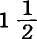小时，午后小餐小时，正好比现行工厂法规定的吃饭时间多一倍。(93)冬季，是从早晨5点干到天黑，中间的休息时间不变。1562年的伊丽莎白法令，没有触动“按日领工资或按周领工资”的所有工人的工作日长度，不过它设法把夏季的休息时间限制为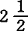小时，冬季限制为2小时。午饭时间只有1小时，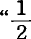小时午睡制”只准在5月中至8月中这段时间内实行旷工1小时扣工资1便士。但实际上，工人的待遇要比法令规定的好得多。政治经济学之父，在某种程度上也可以说是统计学的创始人威廉·配第，在17世纪最后30多年发表的一部著作中说：
“工人〈当时是指农业工人〉一天做工10小时，一星期吃饭20次，就是说平日每天3次，星期天两次。可见，只要他们星期五晚上节食，午饭时间不像现在这样用两小时即从11时到1时，而用一个半小时，从而劳动增加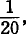消费减少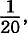那么，上述税收的就可以筹集出来了。”(94)
安德鲁·尤尔博士抨击1833年的十二小时工作日法案是倒退到黑暗时代，不是说得很公平吗？当然，劳工法中列举的并为配第所提到的各项规定对学徒也是适用的。至于直至17世纪末儿童劳动的情况究竟怎样，我们从下面的怨言中可以看出：
“我们英国少年在当学徒以前，什么都不干，因此，他们当然需要7年这样长的时间，才能成为熟练的手艺人。”
相反地，德国值得夸耀的是，那里的儿童在摇篮里就至少“受到一点职业训练”(95)。
在18世纪的大部分时间内，直到大工业时代以前，英国资本还不能靠支付劳动力一星期的价值而占有工人的整个星期，只有农业工人是例外。当时工人靠4天的工资可以生活一星期，在他们看来，这一事实并不能成为其余两天也要为资本家做工的充分理由。英国有一派经济学家为了替资本效劳，猛烈攻击工人顽固不化；另一派经济学家则为工人辩护。例如，让我们听听波斯尔思韦特（当时他编的商业辞典，就像现在麦克库洛赫和麦格雷戈的同类著作一样受到好评）和前面引述过的《论手工业和商业》的作者(96)之间的争论吧(97)。
波斯尔思韦特说道：
“我在结束这几点评述的时候，不能不提到从许多人那里听来的这样一种陈腐论调：如果工人（industrious poor）做5天工就足够维持生活，他就不想做满6天工。他们因此做出结论说，必须用税收或任何其他办法提高那些甚至是必要生活资料的价格，来迫使手工业者和工场手工业工人每星期不间断地劳动6天。请原谅，我的见解和这些要本王国的劳动人口永远做奴隶的大政治家们不同。他们忘记了这样一句谚语：‘只管干活不玩耍，头脑迟钝人变傻’。难道英国人没有因为他们多才多艺的手工业者和工场手工业工人一向为不列颠的商品争得普遍声誉而感到自豪吗？这是怎样得来的呢？或许就是由于我们生性活泼的劳动大众善于消遣娱乐吧。如果硬要他们终年劳碌，每星期干满6天，而且老是干同样的活，那他们的才能不会退化吗？他们不会由活泼的灵巧的人变为笨拙的迟钝的人吗？我们的工人由于这种长期的奴隶制，不是会丧失自己的声誉而不是保持自己的声誉吗？…… 还能指望受着这种残酷折磨的动物有什么熟练的技艺吗？……他们中间许多人4天干的活，抵得上法国人干5—6天。但是，如果英国人长期做苦力，恐怕他们就会退化，落在法国人后面。我国人民在战争中素以勇敢闻名，我们不是常说，这是因为一方面有美味的英国牛排和布丁来果腹，另一方面有立宪的自由精神吗？我国手工业者和工场手工业工人所以有高超的才能、精力和技巧，怎能说不是因为他们享有可以随意消遣娱乐的自由呢？但愿他们永远不会丧失这种特权，不会失去成为他们劳动技巧和英勇精神的来源的优越生活！”(98)
关于这个问题，《论手工业和商业》的作者却回答说：
“假如每周的第七天休息是上帝的安排，那就是说，其余6天属于劳动〈下面我们就会看到，他的意思是说属于资本〉，所以强制实行上帝的这一诫命[221]，决不能说是残忍的行为…… 人一般说来天生是好逸恶劳的，我们从我国工场手工业工人的行为就不幸地体验到这一点。除非生活资料涨价，不然他们每周平均顶多干4天活…… 假定1蒲式耳小麦代表一个工人的全部生活资料，价格为5先令，工人干一天活挣1先令。这样，他一周只需要劳动5天；如果1蒲式耳小麦为4先令，他就只需要劳动4天…… 但是本王国的工资比生活资料的价格高得多，因此工场手工业工人劳动4天，就可以有余钱维持一周其余几天的闲适生活……我希望，我说的这些已足以表明，一周进行6天适度的劳动并不是什么奴隶制。我国农业工人就是一周干6天活的，看来他们是工人（labouring poor）中最幸福的人(99)；荷兰人在手工工场每周也是劳动这么多天，而且看来是一个很幸福的民族。法国人也是这样劳动，只要不是中间插了许多假日的话(100)……但是我们的民众却有一种成见，好像他们作为英国人生来就有一种特权，应该比欧洲任何一国的〈工人大众〉都享有更大的自由和独立。这种思想使我们的士兵勇敢起来，就这点说，它可能有些好处；但是工场手工业工人受这种思想的影响越小，他们本身和国家得到的好处就越大。工人无论什么时候都不应当认为自己可以不依靠自己的上司而独立……在我们这样一个大概占总人口的人只有一点财产或没有财产的商业国家里，怂恿不良分子是非常危险的(101)……只有我们的工业贫民情愿做6天工而依旧领取现在做4天工所得的工资，情况才能根本好转。(102)”
为了这种目的，也为了“根除懒惰、放荡和对自由的奢望”，同时也为了“减轻济贫税、鼓励勤勉精神和压低手工工场的劳动价格”，我们的忠于资本的埃卡尔特提出了一个行之有效的办法，就是把这些依赖社会慈善事业的工人，一句话，把需要救济的贫民关进“理想的习艺所”。“这种习艺所应当成为恐怖之所。”(103)在这种“恐怖之所”，这种“理想的习艺所”里，“每天”应当劳动“14小时，不过其中包括适当的吃饭时间，因此净剩的劳动时间是整整12小时”。(104)
在1770年的“理想的习艺所”，即恐怖之所，工作日是12小时而经过了63年，到了1833年，当英国议会把四种工业(105)部门的13—18岁的儿童的工作日缩短为整整12小时的时候，似乎英国工业的末日就到来了！1852年，当路易·波拿巴为了巩固自己在资产阶级心目中的地位，打算修改法定的工作日时，法国工人大众异口同声地高呼：“把工作日缩短为12小时的法令，是共和国立法留给我们的惟一福利！”(106)在苏黎世，10岁以上的儿童的劳动限制为12小时；在阿尔高州，13—16岁的儿童的劳动在1862年从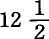小时减为12小时；在奥地利，14—16岁的儿童的劳动在1860年也缩短为12小时。(107)如果麦考莱还在的话，一定会以“惊喜若狂”的心情大叫“1770年以来的巨大进步”！(108)
需要救济的贫民的“恐怖之所”在1770年还只是资本灵魂的梦想，几年以后，它却作为工场手工业工人自身的庞大的“习艺所”矗立起来了。它叫作工厂。但是这一次，理想在现实面前大为逊色。
6.争取正常工作日的斗争。对劳动时间的强制的法律限制。1833—1864年英国的工厂立法
资本经历了几个世纪，才使工作日延长到正常的最大极限，然后越过这个极限，延长到十二小时自然日的界限。(109)此后，自18世纪最后三十多年大工业出现以来，就开始了一个像雪崩一样猛烈的、突破一切界限的冲击。习俗和自然、年龄和性别、昼和夜的界限，统统被摧毁了。甚至旧法规(110)中按农民的习惯规定的关于昼夜的简单概念，也变得如此模糊不清，以致一位英国法官还在1860年为了对昼和夜作出“有判决力的”解释，就不得不使出真正学究式的聪明。(111)资本则狂欢痛饮来庆祝胜利。
被生产的轰隆声震晕了的工人阶级一旦稍稍清醒过来，就开始进行反抗，首先是在大工业的诞生地英国。但是30年来，工人所争得的让步完全是有名无实的。从1802年到1833年，议会颁布了5个劳动法[222]，但是议会非常狡猾，它没有批准一文钱用于强制地实施这些法令，用于维持必要的官员等等。(112)这些法令只是一纸空文。
“事实是，在1833年法令以前，任意让儿童和少年整夜、整日或整昼夜从事劳动。”(113)
现代工业中的正常工作日，只是从1833年颁布了有关棉、毛、麻、丝工厂的工厂法起才出现的。1833年到1864年的英国工厂立法史，比任何东西都更能说明资本精神的特征！
1833年的法令规定，工厂的普通工作日应从早晨5点半开始，到晚上8点半结束。在这15小时的界限内，在白天的任何时间使用少年（从13岁到18岁）做工都是合法的，但是有一个条件：除某些特别规定的情况外，同一个少年一天之内做工不得超过12小时。法令的第6节规定：“在限制的劳动时间内，每人每天至少应有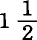小时的吃饭时间”。除开下面要谈到的例外情况，禁止雇用未满9岁的儿童；9岁至13岁的儿童的劳动每天限制为8小时。禁止9岁至18岁的少年做夜工，也就是在该法令所说的晚上8点半至早晨5点半之间做工。
立法者根本不想触犯资本榨取成年劳动力的自由，即他们所说的“劳动自由”，于是想出一种别出心裁的制度来防止工厂法造成这种令人发指的后果。1833年6月28日委员会中央评议会的第1号报告说道：
“现时工厂制度的大弊病，在于它必然把儿童劳动延长到成年人工作日的极限。克服这种弊病的惟一的方法，看来就是实行儿童分两班做工的方案，而是去限制成年人的劳动，因为那样造成的弊病比要消除的弊病更大。”[223]
这个“方案”于是就以“换班制度”（“System of Relays”；在英语和法语中，Relay都指到驿站换马）的名义实施了。例如，9岁到13岁的儿童分成两班，一班从早晨5点半到午后1点半，另一班从午后1点半到晚上8点半，等等。
工厂主先生们极端厚颜无耻地无视最近22年来所公布的一切有关儿童劳动的法律，为了奖赏他们，如今又给他们吞服的药丸涂上一层金色。议会决定，未满11岁的儿童从1834年3月1日起，未满2岁的儿童从1835年3月1日起，未满13岁的儿童从1836年3月日起，在工厂劳动不应超过8小时！这种对“资本”如此宽厚的“自由主义”，理应得到更多的赞赏，因为法尔医生、安·卡莱尔爵士、本·布罗迪爵士、查·贝尔爵士、格思里先生等等，一句话，当时伦敦最著名的内科和外科医生，在下院作证时都曾经说过，“危险在于迟缓！”[224]。关于这个问题，法尔医生说得更尖锐：
“为了防止由任何原因引起的早死，立法同样是必要的。这种方法〈工厂方法〉无疑应看作是引起早死的最残酷的方法之一。”(114)
同一个“经过改革”的议会，一方面出于对工厂主先生们的温情，迫使未满13岁的儿童在几年内继续在工厂地狱里每周劳动72小时；另一方面却在那也是一点一滴地给予自由的解放法令[226]中，一开始就禁止种植园主强迫任何黑奴每周劳动45小时以上！
但是资本毫不体谅，却掀起了一个叫嚷了好几年的鼓动运动。运动主要是围绕着什么样的年龄算是儿童的问题，因为法律规定，儿童每天做工不得超过8小时，并且要受到一定的义务教育。根据资本主义人类学的说法，儿童时代到10岁，或者至多到11岁就结束了。工厂法完全生效的日期——不祥的1836年——越接近，工厂主这帮恶棍就越猖狂。他们确实把政府吓住了，于是政府在1835年建议把儿童时期的界限从13岁降为12岁。但这时外界的压力也越来越带有威胁性。下院没有勇气这样做了。它拒绝把13岁的儿童扔在资本的札格纳特车轮下[227]每天被压榨8小时以上。1833年的法令完全生效了。直到1844年6月它一直没有变动。
在工厂劳动先是局部后是全部受到这项法令约束的10年间，工厂视察员的官方报告充满了关于这项法令无法实施的抱怨。1833年的法令规定，在早晨5点半到晚上8点半这15小时内，每个“少年”和“儿童”究竟什么时候开始、中断和停止他的12小时或8小时劳动，完全由资本家先生们去决定，并且他们还可以为不同的人规定不同的吃饭时间，这样一来，这班先生很快就找到一种新的“换班制度”(115)，让驿马不是在一定的驿站换班，而是在不固定的驿站上一次又一次地被套上跑下去。我们不来进一步谈论这个制度的妙处，因为后面我们还要谈到。但是一眼就看得很清楚，这个制度不仅使整个工厂法的精神，而且使它的条文都落空了。既然每个儿童和少年的账册如此复杂，工厂视察员有什么办法迫使工厂主遵守法定的劳动时间和吃饭时间呢？以前那种残酷的不法行为很快地又在许多工厂中不受惩罚地盛行起来。工厂视察员在同内务大臣的一次会见1844年）时证明说，在新发明的换班制度下不可能实行任何监督。(116)但这时情况毕竟有了很大变化。特别是从1838年以来，工厂工人把十小时工作日法案当作自己经济上的竞选口号，正像他们把宪章[228]当作自己政治上的竞选口号一样。甚至一部分按照1833年法令来经营工厂的工厂主，也上书议会，控告某些“口是心非的弟兄”进行不道德的“竞争”，因为这些人由于更加厚颜无耻或拥有较有利的地方条件就违反法律。此外，尽管个别的工厂主仍然可以为所欲为，工厂主阶级的代言人和政治领袖却要求对工人采取另一种态度和使用另一种语言。他们已经发动了废除谷物法的运动，为了取得胜利，需要工人的帮助！因此，他们不仅答应把大圆面包加大一倍[229]，而且答应在自由贸易的千年王国[230]内实行十小时工作日法案。(117)所以，他们就更不能去反对那种只以实行1833年法令为目的的措施了。(118)最后，托利党人由于自己的最神圣的利益即地租受到威胁，也用博爱家的口吻大骂他们的敌人的“可耻行为”(119)。
于是就出现了1844年6月6日的补充工厂法。它从1844年10月1日开始生效。它又把另一类工人，即18岁以上的妇女，置于法律保护之下。她们在各方面都受到与少年工相同的待遇，她们的劳动时间限制为12小时，禁止做夜工，等等。立法第一次被迫对成年人的劳动也进行直接的正式的监督。1844—1845年的工厂报告讽刺地说：
“就我们所知，成年妇女还从未抱怨过这种侵犯她们权利的行为。”(120)
13岁以下的儿童的工作日缩短为每天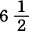小时，在有些条件下是7小时。(121)
为了防止滥用虚假的“换班制度”，法律又规定了下列重要的细则：
“儿童和少年的工作日，应该从有任何一个儿童或少年早晨在工厂里开始劳动的时候算起。”
按照这个规定，如果A是从早晨8点开始劳动，B是从10点开始劳动，那么，B的工作日仍然要和A的工作日一样，应在同一时间结束。开工时间应以某个公共时钟为准，例如，以附近的铁路时钟为准，工厂的钟要和这个铁路时钟保持一致。工厂主必须在工厂张贴大字印刷的时间表，说明上工、下工、休息的时间。12点以前上工的儿童不得在下午1点钟以后又让做工。这样，下午班就不能再有上午班的儿童。受法律保护的全体工人都要有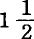小时的吃饭时间，并应在同一时间吃饭，其中至少有1小时应在下午3点以前。儿童或少年至少应有半小时的吃饭时间，否则不得让他们在下午1点以前做工5小时以上。儿童、少年和妇女不得留在某种劳动过程正在进行的厂房中吃饭，等等。
我们看到，这些按照军队方式一律用钟声来指挥劳动的期间、界限和休息的细致的规定，决不是议会设想出来的。它们是作为现代生产方式的自然规律从现存的关系中逐渐发展起来的。它们的制定、被正式承认以及由国家予以公布，是长期阶级斗争的结果。它们的直接后果之一，就是这些规定的实施使工厂的成年男工的工作日也受到同样的限制，因为在大多数生产过程中，必须有儿童、少年和妇女的协作。所以总的说来，在1844—1847年期间，受工厂立法约束的一切工业部门，都普遍一致地实行了十二小时工作日。
但是，工厂主如果没有得到某种“退步”作补偿，是不会容忍这种“进步”的。在他们的敦促下，下院把可以雇用的儿童的最低年龄从9岁减为8岁，以保证资本按照上帝旨意和人间法律得到“工厂儿童的追加供给”(122)。
1846—1847年在英国经济史上划了一个时代。谷物法废除了，棉花和其他原料的进口税取消了，自由贸易被宣布为立法的指路明灯！一句话，千年王国出现了。另一方面，宪章运动和争取十小时工作日的鼓动在这期间达到了顶点。它们在渴望报仇的托利党人那里找到了同盟者。尽管以布莱特和科布顿为首的言而无信的自由贸易派疯狂反抗，争取了很长时间的十小时工作日法案终于由议会通过了。
1847年6月8日的新工厂法规定，从1847年7月1日起，“少年”（从13岁到18岁）和所有女工的工作日先缩短为11小时，而从1848年5月1日起，最终限制为10小时。在其他方面，这个法令只是1833年和1844年的法令的修正补充。
资本先发制人，想使这个法令在1848年5月1日不能完全实行。而且，似乎由于取得经验教训而变得聪明的工人自己应当来帮助再一次破坏自己的事情。时机是选择得很巧妙的。
“必须记住，1846—1847年爆发了可怕的危机，工厂工人深受其害，因为很多工厂开工不足，另一些工厂完全停工。大量工人的生活非常窘迫，很多工人负有债务。因此，可以有把握地断定，他们宁愿劳动时间更长一些，以便弥补过去的亏损，偿还债务，或者从当铺赎回自己的家具，或者把卖掉的东西再补充进来，或者为自己和家属添制新衣。”(123)
工厂主先生们普遍把工资降低了10%，企图以此来助长这种状况的自然作用。而这就是所谓向自由贸易新纪元的献礼。后来，工作日缩短为11小时，工资又降低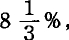最后工作日缩短为10小时，工资降低的百分比再增加一倍。因此，凡是在情况允许的地方，工资至少降低了25%。(124)在这样准备妥当的时机下，就在工人中间展开了废除1847年法令的鼓动。欺骗、诱惑、威胁的手段全都用了，但都是枉费心机。虽然在工人中间征集到了半打请愿书，诉说“他们深受这个法令的压迫”，但是在口头询问这些请愿者的时候，他们说是被迫签名的。“他们是受压迫，但不是受工厂法而是受某种人的压迫。”(125)工厂主们既然无法使工人说出他们工厂主想说的话于是自己就以工人的名义在报刊上和议会里大叫大嚷。他们指责工厂视察员是一种国民公会委员[231]，想靠残酷无情地牺牲不幸的工人，来实现他们改善世界的奇想。但是这一招也没有得逞。工厂视察员伦纳德·霍纳本人以及通过他的助手在兰开夏郡的工厂中询问了很多证人。在被询问的工人中，赞成十小时工作日的将近70%赞成十一小时的百分比要小得多，赞成原来的十二小时的只占极少数。(126)
另一个“友好的”花招是使成年男工劳动12—15小时，然后宣布这是无产阶级内心愿望的最好的表达。但是“残酷无情的”工厂视察员伦纳德·霍纳马上又出现了。大多数“加班加点工人”声称：
“他们宁愿劳动10小时而少拿些工资，但是他们没有选择的余地；他们有很多人失业，有很多纺纱工人被迫去做零工，如果他们拒绝延长劳动时间，别人马上就会把他们挤走。所以，摆在他们面前的问题是：或者把劳动时间延长一些，或者流落街头。”(127)
资本想先发制人，但是失败了。十小时工作日法令于1848年5月1日生效。但这时，宪章派也失败了。他们的领袖被关进监狱，他们的组织遭到破坏。宪章派的失败已经动摇了英国工人阶级的自信心。[232]不久，巴黎的六月起义和对起义的血腥镇压，[233]使欧洲大陆和英国的统治阶级的一切派别——土地所有者和资本家，交易所豺狼和小商人，保护关税论者和自由贸易论者，政府和反对派，教士和自由思想者，年轻的娼妇和年老的修女——都在拯救财产、宗教、家庭和社会的共同口号下联合起来了！工人阶级到处被排除在法律保护之外，被革出教门，受到“嫌疑犯处治法”[234]的迫害。工厂主先生们可以为所欲为了。他们进行公开的反叛，不仅反对十小时工作日法令，而且反对1833年以来力图对劳动力的“自由”榨取稍加限制的一切立法。这是一次缩小型的“维护奴隶制的叛乱”，这次叛乱蛮横无耻，疯狂已极，持续了两年多，而这样做是十分便宜的，因为叛乱的资本家只是用自己工人的生命进行冒险。
为了便于了解以后的事情，必须记住：1833年、1844年和1847年的各个工厂法，凡是在后者没有对前者进行修改的地方，都保留了法律效力；这三个法令都没有限制18岁以上的男工的工作日；从1833年以来，早晨5点半至晚上8点半这15小时的时间始终是法定“日”，在这个界限以内，少年和妇女可以在法律规定的条件下，起先劳动12小时，后来劳动10小时。(128)
某些地方的工厂主开始把他们雇用的少年工和女工解雇一部分，有时甚至解雇一半，同时却把几乎已经绝迹的夜工在成年男工当中恢复了。他们叫嚷说，十小时工作日法令使他们别无出路！(129)
第二步是针对法定的吃饭时间，让我们听听工厂视察员是怎样说的：
“自从工作日限制为10小时以来，工厂主们就说（虽然实际上他们还没有完全实现他们所说的），如果劳动是从早晨9点到晚上7点，那么他们在早晨9点以前拿出1小时，在晚上7点以后拿出半小时，总共用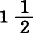小时作为吃饭时间，这也就是充分地执行法令的规定了。现在，在某些场合，他们准许有半小时或1小时的午饭时间，但是他们坚持说，他们没有义务把这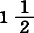小时的任何部分包括在十小时工作日之内。”(130)
因此，工厂主先生们硬说，1844年法令关于吃饭时间的十分详细的规定(131)，只是允许工人在进厂以前和离厂以后，即在自己家里吃饭喝水！工人为什么不应当在早晨9点以前吃午饭呢？但是皇家法官裁决说，法律规定的吃饭时间
“必须安排在实际工作日的休息时间内。让工人从早晨9点到晚上7点连续不停地劳动10小时是不合法的”(132)。
经过这几场愉快的示威后，资本采取了与1844年法令条文相适应的即合法的步骤来进行反叛。
诚然，1844年的法令规定，上午12点以前做工的8—13岁的儿童不准在下午1点以后又让做工。(133)但是在中午12点或下午开始做工的儿童的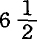小时劳动，法令却未作任何规定！因此，可以使中午12点开始做工的8岁儿童在12点至1点之间干1小时，在下午2点至4点之间干2小时，在5点至晚上8点半之间干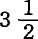小时，总共是法定的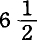小时！甚至还有更妙的办法。为了使儿童的劳动同干到晚上8点半的成年男工的劳动配合起来，工厂主只要在下午2点以前不给儿童活干，就可以使他们在工厂中连续不停地干到晚上8点半！
“现在人们公开承认，近来由于工厂主拼命使机器开动10小时以上，在所有的少年和妇女都离开工厂以后，8—13岁的男女儿童被留下来和成年男工一起干到晚上8点半，这种办法已在英国实行。”(134)
工人和工厂视察员从卫生和道德的角度提出抗议。但资本回答说：
“我的行为没有越轨，我要求我的权利！那就是我的契约上规定的罚金和抵押品！”[235]
事实上，1850年7月26日向下院提出的统计材料表明，尽管有各种抗议，到1850年7月15日为止，还有257家工厂的3742个儿童受着这种“办法”的折磨。(135)不仅如此！资本的山猫眼睛发现1844年的法令规定，在上午连续劳动5小时至少要休息30分钟，但是关于下午的劳动却没有任何类似的规定。因此，资本要求而且确实也迫使8岁的童工不仅从下午2点一直拼命干到晚上8点半，而且还要挨饿！
“对了，他的胸部，契约上是这么说的！”(136)
对于1844年法令限制儿童劳动的条款，资本家像夏洛克那样死抠法令条文，只是为了对该法令限制“少年和妇女”的劳动的这同一项条款进行公开的反叛作准备。我们记得，废除“虚假的换班制度”是这个法令的主要目的和主要内容(137)。工厂主开始反叛这个法令的时候，只是简单地声明说，1844年法令禁止在十五小时工厂日内任意分小段时间来使用少年和妇女的条款，
“在劳动时间限制为12小时的时候，没有造成多大损失。而在实行十小时工作日法令的情况下，它们就是难以忍受的不公平了”(138)。
因此，他们用最冷静的态度向视察员宣称，他们将不理睬法律的条文，他们打算自行恢复旧的制度。(139)据说，这样做符合听了不良劝告的工人本身的利益，
“能对他们支付较高的工资”。“这是在实行十小时工作日法令下保持大不列颠的工业优势的惟一可能的办法。”(140)“在换班制度下要发现违法情况也许有些困难，但这又有什么关系呢？难道为使工厂视察员及其助手省掉一些小小的麻烦，就应当把这个国家的巨大的工厂利益看成是次要的东西吗？”(141)
当然，所有这些遁词都无济于事。工厂视察员向法庭提出诉讼。但是工厂主的请愿书立即像雪片似地飞向内务大臣乔治·格雷爵士，以致他在1848年8月5日的通令中晓谕视察员：
“只要还没有证实换班制度被滥用来使少年和妇女劳动10小时以上，一般不要按违背法令条文来追究。”
在这以后，工厂视察员约·斯图亚特就准许苏格兰全境在十五小时工厂日内实行所谓换班制度，于是这种制度很快就像以前那样盛行起来。而英格兰的工厂视察员则声明，内务大臣没有权力自作主张中止法律的实施，并且继续向法庭控告那些维护奴隶制的叛乱者。
但是，既然法庭，郡治安法官(142)宣判他们无罪，那传讯又有什么用呢？在这些法庭上坐的是工厂主先生，他们是自己审问自己举一个例子。克肖—利斯公司的纺纱厂主，一个叫埃斯克里格的人曾把他的工厂准备实施换班制度的计划提交本区的工厂视察员。在他的计划被拒绝以后，他起初没有采取什么行动。几个月以后，一个叫鲁宾逊的人——也是纺纱厂主，他如果不是埃斯克里格的星期五至少也是他的亲戚——由于实行一种与埃斯克里格想出的换班制度相同的制度而被控告到斯托克波特市巴勒区治安法官。庭上坐着位法官，其中3位是纺纱厂主，而以那位必不可少的埃斯克里格为首。埃斯克里格宣判鲁宾逊无罪，并且说，对鲁宾逊来说是合法的事，对埃斯克里格也是合理的。于是，他根据他自己的具有法律效力的判决，马上就在自己的工厂里实行这种制度。(143)不用说，这种法庭的组成本身就是对法律的公然违反。(144)工厂视察员豪威耳叫道：
“这种审判把戏亟须改革……或者是使法律适应这种宣判，或者是让一个犯错误较少、能使判决适应法律的法院去执行……在一切这样的场合都多么需要领薪水的法官啊！”(145)
皇家法官宣布工厂主对1848年法令的解释是荒谬的，但是社会的救主们坚持原来的想法。伦纳德·霍纳报告说：
“我在7个审判区中提出10件诉讼，试图强制人们执行法律，可是只有1件诉讼得到治安法官的支持……我认为再对违法行为提出诉讼是徒劳无益的。法令中规定劳动时间要整齐划一的那一部分条文……在兰开夏郡已经不发生效力。我和我的助手没有任何办法能使自己确信，那些实行所谓换班制度的工厂不让少年和妇女劳动10小时以上……1849年4月底，在我的管区里已经有114家工厂采用这种方法，近来这种工厂的数目还在急剧增加。一般说来，现在工厂的劳动是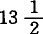小时，从早晨6点到晚上7点半；也有劳动15小时的，从早晨5点半到晚上8点半。”(146)
还在1848年12月，伦纳德·霍纳就列举出65个工厂主和29个工厂监工，说他们一致认为，在这种换班制度下，任何监督制度都不能阻止过度劳动的广泛流行。(147)同一批儿童和少年时而由纺纱车间调到织布车间，时而在15小时之内由这个工厂调到那个工厂。(148)这样一种制度怎能加以监督呢，
“它滥用换班之名，把工人像纸牌一样按无限多样的方式混杂起来，并且天天变更各人的劳动和休息时间，以致同组的全体工人永远不能在同一时间同一地点做工！”(149)
但是，完全撇开现实的过度劳动不说，这种所谓换班制度是资本幻想的产物，连傅立叶关于“短时工作”[240]的幽默描写都相形见绌，所不同的只是，劳动的吸引力转化成了资本的吸引力。我们来看看工厂主所编制的那些计划吧，它们被有声望的报纸誉为“在相当精细和适当的安排下才能做出的事物”的典范。全体工人有时被分为12至15个类别，各类别本身的组成部分不断改变。在十五小时工厂日内，资本一会儿把工人拉来干30分钟，一会儿拉来干1小时，然后又把他推开，接着又把他拉来，然后再把他推开，就这样一小段一小段时间地把他赶来赶去，但是在他未做满10小时之前，决不把他放掉就像在舞台上一样，同样一些人物要在各幕戏的各个场次轮流出场但是也正像演员在整个戏的演出中是属于舞台一样，现在，工人在15小时之内是属于工厂，其中还不包括上下工走路的时间。于是休息时间变成了强制闲逛的时间，它把少年男工赶进酒店，把少年女工赶进妓院。资本家力图不增加劳动人员而使自己的机器开动12小时或15小时，为此他们每天都想出新招，这就使工人不得不有时抓住这一点零碎时间，有时抓住那一点零碎时间把饭吞下去。在争取十小时工作日的鼓动期间，工厂主大喊大叫，说工人歹徒们请愿的目的是想用10小时的劳动取得12小时的工资。现在他们是反过来了。他们支配劳动力12小时或15小时，而只支付10小时的工资！(150)这就是问题的实质，这就是工厂主对十小时工作日法令的解释！正是这些假献殷勤、满嘴博爱的自由贸易论者，在宣传反对谷物法的整整10年中，一分一毫地算给工人听，说如果可以自由输入粮食，那么按照英国工业的能力，只要实行十小时工作日就足以使资本家发财致富了。(151)
资本进行了两年的叛乱终于取得了胜利：英国四个高等法院之一，财务法院，于1850年2月8日判决一件案子时宣布，虽然工厂主违反了1844年法令的精神，但是这个法令本身的某些词句已经使法令变得毫无意义。“这种判决就是废除了十小时工作日法。”(152)很多以前不敢对少年和女工实行换班制度的工厂主，现在都双手抓住换班制度不放了。(153)
但是，随着资本获得表面上的最后胜利，情况立即又发生了变化。在此以前，工人虽然日复一日地进行不屈不挠的反抗，但是这种反抗一直采取守势。现在他们在兰开夏郡和约克郡召开声势浩大的集会表示抗议。他们提出，所谓十小时工作日法令只是一场骗局，只是议会的欺诈行为，根本就未存在过！工厂视察员急切地警告政府说，阶级对抗已经达到难以置信的紧张程度。甚至一部分工厂主也抱怨起来：
“治安法官的互相矛盾的判决，造成十分不正常的、无政府的状态。在约克郡是一种法律，在兰开夏郡又是一种法律，在兰开夏郡的某一教区是一种法律在邻近的教区又是一种法律。大城市的工厂主可以逃避法律，小地方的工厂主找不到必要的人手来实行换班制度，更不必说把工人从一个工厂调到另一个工厂……”
平等地剥削劳动力，是资本的首要的人权。
在这种情况下，工厂主和工人之间取得了某种妥协，这种妥协被议会在1850年8月5日新的补充工厂法中固定下来。“少年和妇女”的工作日，在一周的前5天从10小时延长为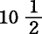小时，星期六限制为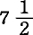小时。劳动时间应从早晨6点至晚上6点(154)，其中休息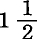小时作为吃饭时间，吃饭时间应当统一，并且要符合1844年的规定等等。这样，换班制度就永远结束了。(155)关于儿童劳动1844年的法令仍然有效。
有一类工厂主，这一次也和以往一样，保全了自己对无产阶级儿童的特殊的领主权。他们是丝厂厂主。1833年他们曾咄咄逼人地喊叫“如果剥夺他们让各种年龄的儿童每天劳动10小时的自由，那就等于让他们的工厂停工。”他们说，他们无法买到足够数量的11岁以上的儿童他们强行取得了想要取得的特权。后来的调查表明，他们的借口纯系捏造(156)，但是这并没有妨碍他们在整整10年内，每天用10小时从那些必须靠人放到凳子上才能干活的幼童的血中抽出丝来。(157)1844年的法令虽然“抢走了”他们让不满11岁的儿童每天劳动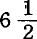小时以上的“自由”，但是保证了他们每天剥削11—13岁的儿童10小时的特权，并且取消了儿童在其他工厂本来可以受到的义务教育。这一次的借口是：
“细巧的织物需要灵巧的手指，而这只有年幼时进工厂才能做到。”(158)
儿童们由于手指细巧而被杀戮，正如俄国南部的牛羊由于身上的皮和油而被屠宰一样。最后，1844年准许的这种特权，到1850年又受到限制而只适用于捻丝和缫丝部门了；但是，为了补偿资本失掉这种“自由”而遭到的损失，11—13岁儿童的劳动时间从10小时延长到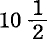小时。借口是：“丝厂的劳动比其他工厂轻，对健康损害较少。”(159)后来，官方医生的调查表明，情况正好相反，
“丝业区的平均死亡率异常高，人口中妇女部分的平均死亡率甚至比兰开夏郡棉纺织业区还高”(160)。
尽管工厂视察员每半年提出一次抗议，但是这种恶劣现象一直继续到现在。(161)
1850年的法令只是把“少年和妇女”的劳动时间从15小时改为1小时，即从早晨5点半至晚上8点半改为从早晨6点至晚上6点。就是说，这种改变不适用于儿童，他们照旧可以在开工前半小时和完工后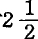小时内被使用，尽管他们劳动的总时间不得超过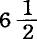小时。在讨论法案的时候，工厂视察员曾向议会提出统计材料，说明这种反常现象造成了可耻的滥用。但是毫无效果。因为在这背后隐藏着一种企图，就是想借助于儿童在繁荣年代重新把成年男工的工作日延长到15小时。以后年的经验表明，这种企图由于成年男工的反抗必定遭到失败。(162)因此1850年法令终于在1853年作了补充：禁止“在少年和妇女早晨上工前和晚上下工后使用童工”。从那时起，除了少数例外情况，1850年的工厂法把受它约束的工业部门的全体工人的工作日都纳入法律限制之内了。(163)从第一个工厂法颁布以来，到这时已经过去半个世纪了。(164)
1845年公布的“印染工厂法”，使立法第一次超出了它原有的范围。资本容许这种新的“狂暴行为”时的不悦心情，贯穿法令的每一行！这个法令把8—13岁的儿童和妇女的工作日限制为16小时从早晨6点到晚上10点，并且没有规定任何法定的吃饭时间。它容许人们任意使13岁以上的男工日夜劳动。(165)这是议会的一次流产。(166)
但是，原则战胜了，它在作为现代生产方式的特殊产物的大工业部门中胜利了。1853—1860年时期这些部门的惊人发展，以及同时出现的工厂工人体力和精神的复活，连瞎子也看得清清楚楚连那些经过半个世纪的内战才被迫逐步同意在法律上限制和规定工作日的工厂主，也夸耀这些工业部门与那些仍旧是“自由的”剥削领域所形成的对照。(167)“政治经济学”上的伪善者现在也宣称，认识在法律上规定工作日的必要性，是他们这门“科学”的突出的新成就。(168)不难了解，在工厂大亨们被迫服从不可避免的东西并且同它和解之后，资本的抵抗力量就逐渐削弱了，而同时工人阶级的进攻力量则随着他们在没有直接利害关系的社会阶层中的同盟者的增加而加强了。这就是从1860年以来进步较快的原因。
染厂和漂白厂(169)在1860年，花边厂和织袜厂在1861年分别受1850年工厂法的约束。由于有童工调查委员会第1号报告（1863年），一切瓦器业（不仅是陶器业）、火柴厂、雷管厂、弹药厂、壁纸厂、天鹅绒厂以及许多统称为“最后整饰”的作业，都遭受同样的命运。1863年，“露天漂白厂”(170)和面包房分别受专门法令的约束，在露天漂白厂中禁止在夜间（从晚上8点至早晨6点）使用儿童、少年和妇女做工，在面包房中禁止在晚上9点至早晨5点使用18岁以下的面包工人(171)。根据童工调查委员会以后的各次建议，英国一切重要工业部门，除农业、采矿业和运输业以外，都有被夺去“自由”的危险，关于这些建议我们以后还要谈到。(172) (173)
7.争取正常工作日的斗争。英国工厂立法对其他国家的影响
读者会记得，不管生产方式本身由于劳动从属于资本而产生了怎样的变化，生产剩余价值或榨取剩余劳动，是资本主义生产的特定的内容和目的(174)。读者会记得，从我们到目前为止所阐明的观点看来，只有独立的、因而在法律上是成年的工人，作为商品出卖者与资本家缔结契约(175)。因此，如果说在我们的历史的概述中，起主要作用的一方面是现代工业，另一方面是身体上和法律上未成年的人的劳动，那么我们只是把前者看作榨取劳动的特殊领域，把后者看作这种榨取的特别鲜明的例子。但是，即使暂不涉及以后的阐述，仅仅根据历史事实的联系，也可以得出如下的结论：
第一，在最早依靠水力、蒸汽和机器而发生革命的工业部门中即在现代生产方式的最初产物——棉、毛、麻、丝等纺织业中，资本无限度地、放肆地延长工作日的欲望首先得到了满足。物质生产方式的改变和生产者的社会关系的相应的改变(176)，先是造成了无限度的压榨，后来反而引起了社会的监督，由法律来限制、规定和划一工作日及休息时间。因此，这种监督在19世纪上半叶只是作为例外情况由法律规定的。(177)但是，当这种监督刚刚征服了新生产方式的已有领域时，它却发现，不仅许多别的生产部门采用了真正的工厂制度，而且那些采用或多或少陈旧的生产方式的手工工场（如陶器作坊、玻璃作坊等）、老式的手工业（如面包房），甚至那些分散的所谓家庭劳动（如制钉业等）(178)，也都像工厂一样早已处于资本主义剥削之下了。因此，立法不得不逐渐去掉它的例外性，或者在像英国这样在立法上仿效罗马决疑论的方式的地方，把有人在里面劳动的任何房屋都任意称为工厂。(179)
第二，某些生产部门中规定工作日的历史以及另一些生产部门中还在继续争取这种规定的斗争，清楚地证明：孤立的工人，“自由”出卖劳动力的工人，在资本主义生产的一定成熟阶段上，是无抵抗地屈服的。因此，正常工作日的确立是资本家阶级和工人阶级之间长期的多少隐蔽的内战的产物。斗争是在现代工业范围内开始的，所以它最先发生在现代工业的发源地英国。(180)英国的工厂工人不仅是英国工人阶级的先进战士，而且是整个现代工人阶级的先进战士最先向资本的理论挑战的也正是他们的理论家。(181)所以，工厂哲学家尤尔咒骂说，英国工人阶级洗不掉的耻辱就是，他们面对勇敢地为“劳动的完全自由”而奋斗的资本，竟把“工厂法的奴隶制”写在自己的旗帜上。(182)
法国在英国后面慢慢地跟了上来。在那里，十二小时工作日法律(183)曾需要二月革命[242]来催生，但是它比自己的英国原版更不完备得多。虽然如此，法国的革命方法还是显示了它的独特的优点它一下子就给所有的作坊和工厂毫无区别地规定了同样的工作日界限，而英国立法却时而在这一点上，时而在那一点上被迫向环境的压力屈服，并且极容易制造出一起又一起的诉讼纠纷。(184)另一方面法国法律作为原则宣布的东西，在英国则只是以儿童、少年和妇女的名义争取的东西，并且这些东西直到最近才作为普遍的权利提了出来。(185)
在北美合众国，只要奴隶制使共和国的一部分还是畸形的，任何独立的工人运动就仍然处于瘫痪状态。在黑人的劳动打上屈辱烙印的地方，白人的劳动也不能得到解放。但是，从奴隶制的死亡中，立刻萌发出一个重新变得年轻的生命。南北战争的第一个果实，就是争取八小时工作日运动，这个运动以特别快车的速度，从大西洋跨到太平洋，从新英格兰跨到加利福尼亚。在巴尔的摩召开的全国工人代表大会[243]（1866年8月）宣布：
“为了把我国的劳动从资本主义的奴隶制下解放出来，当务之急是颁布一项法律，规定八小时工作日为美利坚联邦各州的正常工作日。我们誓以全力争取这一光荣的结果。”(186)
与此同时（1866年9月初），在日内瓦召开的“国际工人代表大会”，根据伦敦总委员会的建议，通过决议：“限制工作日是一个先决条件，没有这个条件，一切进一步谋求工人解放的尝试都将遭到失败……我们建议通过立法手续把工作日限制为8小时。”[244]
这样，大西洋两岸从生产关系本身中本能地成长起来的工人运动，就证实了英国工厂视察员罗·约·桑德斯的话：
“如果不先限制工作日，不严格地强制贯彻工作日的法定界限，要想在社会改革方面采取进一步的措施，是决不可能有任何成功希望的。”(187)
必须承认，我们的工人在走出生产过程时同他进入生产过程时是不一样的。在市场上，他作为“劳动力”这种商品的占有者与其他商品的占有者相对立，即作为商品占有者与商品占有者相对立。他把自己的劳动力卖给资本家时所缔结的契约，可以说像白纸黑字一样表明了他可以自由支配自己。在成交以后却发现：他不是“自由的当事人”，他自由出卖自己劳动力的时间，是他被迫出卖劳动力的时间(188)；实际上，他“只要还有一块肉、一根筋、一滴血可供榨取”(189)吸血鬼就决不罢休。为了“抵御”折磨他们的毒蛇[246]，工人必须把他们的头聚在一起，作为一个阶级来强行争得一项国家法律，一个强有力的社会屏障，使自己不致再通过自愿与资本缔结的契约而把自己和后代卖出去送死和受奴役。(190)从法律上限制工作日的朴素的大宪章[247]，代替了“不可剥夺的人权”这种冠冕堂皇的条目[248]，这个大宪章“终于明确地规定了，工人出卖的时间何时结束，属于工人自己的时间何时开始”(191)。多么大的变化啊！[249]
(1) “工作日是个不定量，可长可短。”（［约翰·肯宁安］《论手工业和商业。兼评赋税》1770年伦敦版第73页）
(2) 这个问题比罗伯特·皮尔爵士向伯明翰商会提出的有名的问题“什么是一镑？”不知要重要多少。皮尔所以提出这样的问题，只是因为他和伯明翰的“小先令派”[191] 一样，不理解货币的本质。
(3) “资本家的任务是：靠所支出的资本来取得尽量多的劳动量。”（让· 古·库尔塞尔-塞讷伊《工商企业、农业企业的理论和实践概论》1857年巴黎第2版第62页）
(4) “每天损失一个劳动小时，会给一个商业国家造成莫大的损害。”“我们王国的劳动贫民大量地消费奢侈品；制造业中的平民尤其如此；他们同时还消费自己的时间——这是各种消费中最有害的一种消费。”（［约翰·肯宁安］论手工业和商业》［1770年伦敦版］第47页和第153页）
(5) “贪婪的吝啬鬼不放心地监视着自由短工，只要他休息一下，就硬说是偷窃了他。”（尼·兰盖《民法论》1767年伦敦版第2卷第466［、467］页）
(6) 1860—1861年，伦敦建筑工人举行大罢工，要求把工作日缩短到9小时，当时他们的委员会发表了一项声明，这项声明同我们这位工人的辩护词几乎完全一样。声明讽刺地指出，一位最贪婪的“建筑业老板”——某个莫·佩托爵士——享有“德高望重的名声”（这位佩托在1867年以后得到了和施特鲁斯堡一样的结局！）。
(7) “那些劳动的人……实际上既养活那些称为富人的领年金者，也养活自己。”（埃德蒙·伯克《关于贫困的意见和详情》1800年伦敦版第2、3页）
(8) 尼布尔在他的《罗马史》中非常天真地指出：“像伊特鲁里亚人的那种建筑，虽然仅存遗迹，但仍令人惊异；这样的建筑，无庸讳言，在小〈！〉国是以奴隶主和奴隶的存在为前提的。”西斯蒙第说得深刻得多：“布鲁塞尔的花边”是以雇主和雇工的存在为前提的。
(9) “这些不幸者〈在埃及、埃塞俄比亚和阿拉伯之间的金矿中做工的人〉不仅总是肮脏不堪，而且不得不赤身露体，谁看到他们，都不能不同情他们的悲惨命运。在这种地方，对于老弱病残和妇女没有任何的照顾和怜悯。所有的人都在皮鞭的逼迫下不断地做工，直到死亡才结束他们的痛苦和贫困生活。”（狄奥多鲁斯（西西里的）《史学丛书》第3卷第13章［第258、260页］）
(10) 以下所述，是指罗马尼亚各州在克里木战争后发生政变163以前的情形。
(11) 〔第3版注：这种情形也适用于德国，特别是易北河以东的普鲁士。在15世纪，德国的农民虽然几乎都要担负一定的实物贡赋和劳役，但是除此之外，他们至少在事实上是自由的人。勃兰登堡、波美拉尼亚、西里西亚和东普鲁士等地的德国移民，甚至在法律上被认为是自由人。贵族在农民战争中的胜利，结束了这种状况。不但战败的德国南部的农民又沦为农奴，而且从16世纪中叶以后，东普鲁士、勃兰登堡、波美拉尼亚和西里西亚的自由农民，以及紧跟着还有石勒苏益格-荷尔斯泰因的自由农民也都降到了农奴的地位。（毛勒德国领主庄园、农户和农户制度史》［1863年埃朗根版］第4卷［第522—523530页］。麦岑《1866年以前普鲁士国家疆域内的土地和农业关系》。汉森《石勒苏益格-荷尔斯泰因公国农奴制》）——弗·恩·〕
(12) 详见埃·雷尼奥《多瑙河两公国政治社会史》1855年巴黎版［第305页及以下几页］。
(13) “一般说来，一个生物体超过它的同类的平均长度，这在某种限度内表示这个生物体的强健。如果人的发育由于自然条件或社会条件而受到妨害，人体就会缩小。在欧洲所有实行征兵制的国家里，自从实行这种制度以来，成年男子的平均身长和整个应征条件都降低了。法国在革命（1789年）以前，步兵身长的最低标准是165厘米，1818年（根据3月10日的法令）是157厘米，根据832年3月21日的法令是156厘米。在法国，应征者平均有一半以上因身长不够和体质孱弱而被淘汰。在萨克森，1780年军人的身长标准是178厘米，目前是155厘米。在普鲁士目前是157厘米。根据1862年5月9日《巴伐利亚报》刊载的迈耶尔博士的报告，普鲁士按9年平均计算，每1000个应征者当中有716人不合格：其中317人因身长不够，399人因体质孱弱……1858年，柏林就没有征足兵额，差156人。”（尤·冯·李比希《化学在农业和生理学中的应用》1862年第7版第1卷第117、118页）
(14) 关于1850年工厂法的历史，将在本章以后的段落叙述。
(15) 英国从大工业产生到1845年这段时期，我只在某些地方提到，有关情况，请读者阅读弗里德里希·恩格斯的《英国工人阶级状况》（1845年莱比锡版）。1845年以后发表的工厂视察员报告、矿山视察员报告等等，都说明了恩格斯对资本主义生产方式的精神了解得多么深刻；把他的著作和过了18—20年以后才发表的童工调查委员会（1863—1867年）的官方报告稍加比较就可以看出，他对工人阶级状况的详细入微的描写是多么令人惊叹。童工调查委员会的报告所谈的恰好是1862年以前尚未实施工厂法的那些工业部门的情形，其中有些部门直到现在还没有实施工厂法。因此，恩格斯所描写的状况在这些部门内并没有受外部影响而发生多大变化。我所举的例子主要属于1848年以后的自由贸易时期，也就是不学无术而又像孚赫[197] 那样吹牛的自由贸易论贩子们神话般地向德国人大吹特吹的那个极乐时期。——这里所以把英国摆在首要地位，只是因为英国是资本主义生产的典型代表，而且对于我们所研究的对象来说，只有英国才有不断公布的官方统计材料。
(16) 《工厂视察员伦·霍纳先生的建议》，载于《工厂法》（根据下院决定于1859年8月9日刊印）第4、5页。
(17) 《工厂视察员报告。截至1856年10月为止的半年》第35页。
(18) 《工厂视察员报告。1858年4月30日》第9、10页。